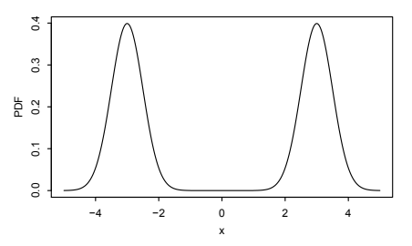
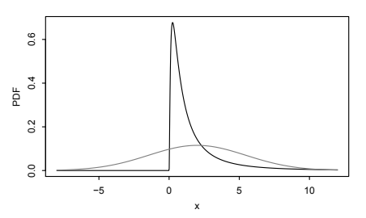
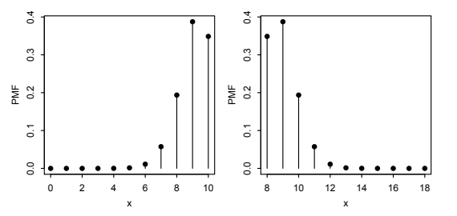
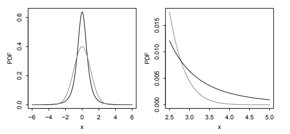
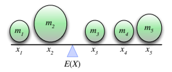
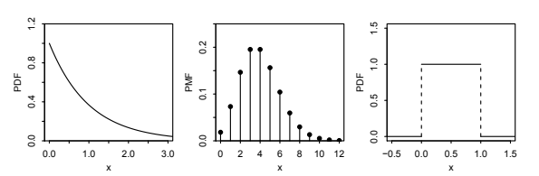
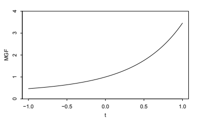
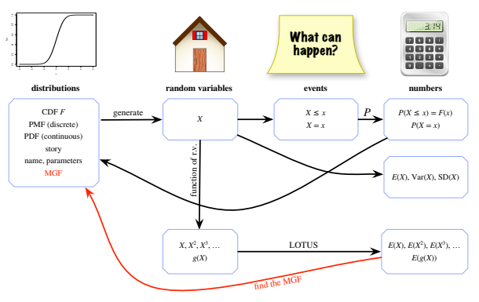

6 적률
확률변수 \(X\)의 \(n\)차 적률은 \(E(X^n)\)이다. 이 장에서는 확률변수의 적률이 그 분포를 이해하는 데 어떤 도움을 주는지 살펴본다. 앞에서 처음 두 적률이 평균 \(E(X)\)와 분산 \(E(X^2)-(EX)^2\)을 제공하므로 유용하다는 것을 보았다. 이 둘은 각각 \(X\)의 평균적인 값과 그 분포가 얼마나 퍼져 있는지를 요약하는 중요한 값이다. 그러나 분포에는 평균과 분산보다 훨씬 많은 정보가 있다.
셋째와 넷째 적률은 각각 분포의 비대칭성과 꼬리 또는 극단값의 거동에 관해 알려 준다는 것을 볼 것이다. 이 두 성질은 평균과 분산에 담겨 있지 않다. 적률을 소개한 후에는 적률생성함수(MGF)를 다룬다. 이는 적률 계산을 도울 뿐 아니라 분포를 지정하는 유용한 대안도 제공한다.
6.1 분포의 요약
평균은 분포의 중심, 구체적으로 질량중심에 관한 정보를 주므로 중심 경향의 척도라고 한다. 통계학에서 흔히 사용하는 중심 경향의 다른 척도로 중앙값과 최빈값이 있다. 이제 이들을 정의하자.
정의 6.1.1 (중앙값). \(P(X\le c)\ge1/2\)이고 \(P(X\ge c)\ge1/2\)이면 \(c\)를 확률변수 \(X\)의 중앙값이라고 한다. 이 조건이 성립하는 가장 간단한 경우는 \(X\)의 누적분포함수가 \(c\)에서 정확히 \(1/2\)에 도달하는 경우이지만, 누적분포함수에는 도약이 있을 수 있음을 알고 있다.
정의 6.1.2 (최빈값). 이산확률변수 \(X\)에 대해 모든 \(x\)에서 \(P(X=c)\ge P(X=x)\), 즉 확률질량함수가 최대가 되면 \(c\)를 \(X\)의 최빈값이라고 한다. 확률밀도함수가 \(f\)인 연속확률변수 \(X\)에 대해서는 모든 \(x\)에서 \(f(c)\ge f(x)\), 즉 확률밀도함수가 최대가 되면 \(c\)를 최빈값이라고 한다.1
평균과 마찬가지로 확률변수의 중앙값과 최빈값도 그 분포에만 의존하므로, 그 분포를 따르는 특정 확률변수를 언급하지 않고 분포의 평균, 중앙값 또는 최빈값을 말할 수 있다. 예를 들어 \(Z\sim\mathcal N(0,1)\)이면 대칭성에 따라 \(\Phi(0)=1/2\)이므로 \(Z\)의 중앙값은 0이다. 표준정규분포의 중앙값이 0이라고도 말한다.
직관적으로 중앙값은 분포의 질량이 양쪽에 절반씩 놓이는 값 \(c\)이며, 이산확률변수에서는 가능한 한 절반에 가깝게 놓이는 값이다. 최빈값은 \(X\)의 지지집합에 있는 값 중 질량 또는 밀도가 가장 큰 값이다. 누적분포함수 \(F\)가 연속이고 엄격히 증가한다면 \(F^{-1}(1/2)\)가 중앙값이며 유일하다.
분포에는 중앙값이 여러 개일 수도 있고 최빈값이 여러 개일 수도 있다. 중앙값은 연이어 나타나야 하지만, 최빈값은 분포의 여기저기에 나타날 수 있다. 그림 6.1은 지지집합이 \([-5,-1]\cup[1,5]\)이고 최빈값은 두 개, 중앙값은 무한히 많은 분포를 보여 준다. \(-1\)과 1 사이에서 확률밀도함수가 0이므로 이 사이의 모든 값은 양쪽에 질량이 절반씩 놓이는 중앙값이다. 두 최빈값은 \(-3\)과 3이다.

예제 6.1.3 (급여의 평균, 중앙값, 최빈값). 어느 회사에 직원 100명이 있다. 이들의 급여를 오름차순으로 정렬하여 \(s_1,s_2,\ldots,s_{100}\)이라 하자. 같은 급여가 여러 번 나타나더라도 이렇게 정렬할 수 있다. 균등하게 무작위로 선택한 직원의 급여를 \(X\)라 하자. 자료 \(s_1,s_2,\ldots,s_{100}\)의 평균, 중앙값, 최빈값은 \(X\)에 대응하는 값들로 정의한다.
대표적인 급여는 얼마인가? 급여 자료를 하나의 수로 요약할 때 가장 유용한 값은 무엇인가? 흔히 그렇듯 답은 목적에 따라 다르다이다. 서로 다른 요약값은 자료의 서로 다른 특성을 드러내므로 하나의 숫자만 고르기가 어려울 수 있다. 보통 여러 요약값을 제시하고 자료를 그림으로 나타낼 수도 있으므로 하나만 골라야 할 필요가 없는 경우도 많다. 여기서는 평균, 중앙값, 최빈값을 간단히 비교하지만, 흔히 셋 모두를 보고하고 다른 요약값도 보고하는 것이 합리적이다.
급여가 모두 다르면 최빈값이 100개이므로 하나의 수로 요약하는 데 유용하지 않다. 회사의 가능한 급여가 몇 가지뿐이라면 최빈값이 더 유용해진다. 그러나 그 경우에도 예를 들어 34명이 급여 \(a\), 33명이 급여 \(b\), 33명이 급여 \(c\)를 받는 일이 있을 수 있다. 그러면 \(a\)가 유일한 최빈값이지만 \(a\)만 보고한다면 최빈값이 될 뻔했고 합하면 자료의 거의 \(2/3\)를 차지하는 \(b,c\)를 무시하게 된다.
다음으로 중앙값을 생각해 보자. “가운데”에는 두 수 \(s_{50}\)과 \(s_{51}\)이 있다. 사실 \(s_{50}\le m\le s_{51}\)인 모든 수 \(m\)이 중앙값이다. 무작위로 고른 직원의 급여가 \(\{s_1,\ldots,s_{50}\}\)에 속할 확률이 적어도 50%이고, 이 경우 급여는 \(m\) 이하이다. 또한 급여가 \(\{s_{51},\ldots,s_{100}\}\)에 속할 확률도 적어도 50%이고, 이 경우 급여는 \(m\) 이상이기 때문이다. 보통의 관례는 가운데 두 수의 평균 \(m=(s_{50}+s_{51})/2\)를 선택하는 것이다. 직원 수가 홀수였다면 이 문제는 생기지 않는다. 그때는 모든 급여를 오름차순으로 나열했을 때 가운데 있는 수가 유일한 중앙값이다.
중앙값은 평균에 비해 극단적인 값에 훨씬 덜 민감하다. 예를 들어 최고경영자의 급여가 다른 누구보다 약간 많은 수준에서 다른 누구보다 훨씬 많은 수준으로 바뀐다면 평균에는 큰 영향을 미칠 수 있지만 중앙값에는 아무 영향이 없다. 이러한 강건성 때문에 중앙값이 대표적인 급여를 요약할 때 평균보다 더 합리적일 수 있다. 반면 회사가 직원 급여에 지출하는 총비용을 알고 싶다고 하자. 최빈값이나 중앙값만 알면 이 정보를 알아낼 수 없지만, 평균을 안다면 그 값에 100을 곱하면 된다. \(\square\)
아직 관측하지 않은 확률변수 \(X\)의 값을 \(c\)로 예측하여 맞히려고 한다고 하자. 평균과 중앙값 모두 \(c\)의 자연스러운 추측값처럼 보이는데, 어느 쪽이 더 나을까? 그것은 “더 낫다”를 어떻게 정의하는지에 달려 있다. \(c\)가 얼마나 좋은지 판단하는 자연스러운 두 방법은 평균제곱오차 \(E(X-c)^2\)와 평균절대오차 \(E|X-c|\)이다. 다음 결과는 각각의 경우 최선의 추측값이 무엇인지 알려 준다.
정리 6.1.4. \(X\)를 평균이 \(\mu\)인 확률변수, \(m\)을 \(X\)의 중앙값이라 하자.2
- 평균제곱오차 \(E(X-c)^2\)를 최소화하는 \(c\)의 값은 \(c=\mu\)이다.
- 평균절대오차 \(E|X-c|\)를 최소화하는 \(c\)의 한 값은 \(c=m\)이다.
증명. 먼저 유용한 항등식을 증명하자.
\[E(X-c)^2=\operatorname{Var}(X)+(\mu-c)^2.\]
모든 항을 전개하여 확인할 수도 있지만 상수를 더해도 분산은 바뀌지 않는다는 사실을 이용하면 더 빠르다.
\[\operatorname{Var}(X)=\operatorname{Var}(X-c)=E(X-c)^2-\bigl(E(X-c)\bigr)^2=E(X-c)^2-(\mu-c)^2.\]
\(c=\mu\)일 때 \((\mu-c)^2=0\)이고 다른 선택에서는 \((\mu-c)^2>0\)이므로, \(E(X-c)^2\)를 최소화하는 유일한 선택은 \(c=\mu\)이다.
다음으로 평균절대오차를 생각해 보자. \(a\ne m\)이라 하자. \(E|X-m|\le E|X-a|\)를 보이면 되며, 이는 \(E(|X-a|-|X-m|)\ge0\)과 동치이다. \(m<a\)라고 가정하자. \(m>a\)인 경우도 비슷하게 처리할 수 있다. \(X\le m\)이면
\[|X-a|-|X-m|=a-X-(m-X)=a-m,\]
\(X>m\)이면
\[|X-a|-|X-m|\ge X-a-(X-m)=m-a.\]
\[Y=|X-a|-|X-m|\]
로 놓자. 지시확률변수를 이용하면 \(X\le m\)의 발생 여부에 따라 \(E(Y)\)를 두 부분으로 나눌 수 있다. \(I\)를 \(X\le m\)의 지시확률변수라 하면 \(1-I\)는 \(X>m\)의 지시확률변수이다. 따라서
\[ \begin{aligned} E(Y)&=E(YI)+E(Y(1-I))\\ &\ge(a-m)E(I)+(m-a)E(1-I)\\ &=(a-m)P(X\le m)+(m-a)P(X>m)\\ &=(a-m)P(X\le m)-(a-m)(1-P(X\le m))\\ &=(a-m)(2P(X\le m)-1). \end{aligned} \]
중앙값의 정의에 따라 \(2P(X\le m)-1\ge0\)이다. 따라서 \(E(Y)\ge0\)이고, 이로부터 \(E|X-m|\le E|X-a|\)가 성립한다. \(\blacksquare\)

어떤 응용에서 어떤 중심 경향의 척도를 사용하든, 대개 분산 등으로 측정하는 분포의 퍼진 정도도 아는 것이 중요하다. 그러나 평균과 분산에 담기지 않는 분포의 중요한 특징도 있다. 예를 들어 그림 6.2의 두 확률밀도함수는 모두 평균 2, 분산 12를 갖는다. 밝은 곡선은 \(\mathcal N(2,12)\)의 확률밀도함수이고 어두운 곡선은 로그정규분포 계열의 확률밀도함수이다. 로그정규분포는 이 장의 뒷부분에서 정의한다. 정규 곡선은 2를 중심으로 대칭이므로 평균, 중앙값, 최빈값이 모두 2이다. 반면 로그정규분포는 오른쪽으로 크게 치우쳐 있다. 이는 오른쪽 꼬리가 왼쪽 꼬리에 비해 매우 길다는 뜻이다. 평균은 2이지만 중앙값은 1이고 최빈값은 0.25이다. 평균과 분산만으로는 로그정규분포의 비대칭성과 정규분포의 대칭성 사이의 차이를 포착할 수 없다.
이제 그림 6.3을 보자. 왼쪽에는 \(\operatorname{Bin}(10,0.9)\) 확률변수의 확률질량함수가, 오른쪽에는 \(8+\operatorname{Bin}(10,0.1)\) 확률변수의 확률질량함수가 있다. 두 분포는 모두 평균, 중앙값, 최빈값이 9이고 분산이 0.9이지만 모습이 매우 다르다. 왼쪽 확률질량함수는 왼쪽으로 치우쳐 있고 오른쪽 확률질량함수는 오른쪽으로 치우쳐 있다고 한다. 이 장에서는 분포의 비대칭성을 나타내는 표준적인 척도가 셋째 적률에 기초한다는 것을 배울 것이다.

앞의 두 예는 비대칭 분포를 다루었지만, 평균과 분산이 같은 대칭분포들도 모습이 매우 다를 수 있다. 그림 6.4의 왼쪽은 평균 0, 분산 1인 대칭 확률밀도함수 두 개를 보여 준다. 밝은 곡선은 \(\mathcal N(0,1)\)의 확률밀도함수이고 어두운 곡선은 \(t_3\) 확률밀도함수의 척도를 바꾸어 분산이 1이 되도록 한 것이다. \(t_3\) 분포는 10장에서 정의한다. 어두운 곡선은 밝은 곡선보다 꼭대기가 더 뾰족하고 꼬리가 더 두껍다. 오른쪽 그림은 꼬리의 거동을 확대해 보여 주는데, 어두운 곡선이 0으로 훨씬 더 천천히 감소하므로 꼬리의 먼 곳에 있는 결과가 밝은 곡선에서보다 일어날 가능성이 훨씬 높다는 것을 쉽게 알 수 있다. 이 장에서 배우겠지만 분포의 꼬리가 얼마나 두꺼운지 나타내는 표준적인 척도는 넷째 적률에 기초한다.

다음 절에서는 적률, 특히 처음 네 적률을 해석하는 방법을 더 자세히 살펴본다.
6.2 적률의 해석
정의 6.2.1 (적률의 종류). \(X\)를 평균이 \(\mu\)이고 분산이 \(\sigma^2\)인 확률변수라고 하자. 임의의 양의 정수 \(n\)에 대해 \(X\)의 \(n\)차 적률은 \(E(X^n)\)이고, \(n\)차 중심적률은 \(E((X-\mu)^n)\)이며, \(n\)차 표준화 적률은 \(E\left(((X-\mu)/\sigma)^n\right)\)이다. 이 문장의 모든 표현에는 ‘존재한다면’이라는 조건이 생략되어 있다.3
특히 평균은 1차 적률이고 분산은 2차 중심적률이다. ‘적률’이라는 용어는 물리학에서 가져온 것이다. \(X\)가 서로 다른 가능한 값 \(x_1,\ldots,x_n\)을 갖는 이산확률변수라고 하자. 각 \(j\)에 대해 수직선의 \(x_j\)에 질량이 \(m_j=P(X=x_j)\)인 조약돌이 놓여 있다고 상상해 보자(그림 6.5). 물리학에서
\[E(X)=\sum_{j=1}^{n}m_jx_j\]
는 이 시스템의 질량중심이라 하고,
\[\operatorname{Var}(X)=\sum_{j=1}^{n}m_j(x_j-E(X))^2\]
은 질량중심에 대한 관성모멘트라 한다.

이제 비대칭성을 수 하나로 요약하는 왜도를 정의하겠다. 앞에서 언급했듯이 왜도는 3차 적률에 기초한다. 실제로 왜도는 3차 표준화 적률로 정의된다.
정의 6.2.2 (왜도). 평균이 \(\mu\)이고 분산이 \(\sigma^2\)인 확률변수 \(X\)의 왜도는 \(X\)의 3차 표준화 적률이다.
\[\operatorname{Skew}(X)=E\left(\frac{X-\mu}{\sigma}\right)^3.\]
먼저 표준화하면 \(\operatorname{Skew}(X)\)의 정의가 \(X\)의 위치나 양의 척도에 의존하지 않는다. 음수배를 하면 왜도의 부호는 뒤집힌다. 위치와 척도에 관한 정보를 제공하는 \(\mu\)와 \(\sigma\)가 이미 있으므로 이는 합리적이다. 또한 먼저 표준화하면 \(X\)를 측정하는 단위가 인치인지 미터인지 등에 따라 왜도가 달라지지 않는다는 좋은 성질을 얻는다.
왜도가 비대칭성을 어떻게 측정하는지 이해하려면 먼저 확률변수가 대칭이라는 것이 무슨 뜻인지 살펴봐야 한다.
정의 6.2.3 (확률변수의 대칭성). \(X-\mu\)가 \(\mu-X\)와 같은 분포를 따르면 확률변수 \(X\)가 \(\mu\)를 중심으로 대칭분포를 갖는다고 말한다. 또한 \(X\)가 대칭이라거나 \(X\)의 분포가 대칭이라고 말하기도 하며, 이 말들은 모두 같은 뜻이다.
위 정의의 \(\mu\)는 평균이 존재한다면 반드시 \(E(X)\)여야 한다. 왜냐하면
\[E(X)-\mu=E(X-\mu)=E(\mu-X)=\mu-E(X)\]
를 정리하면 \(E(X)=\mu\)가 되기 때문이다. 따라서 평균이 존재한다면 “\(X\)는 대칭이다”를 “\(X\)는 평균을 중심으로 대칭이다”의 줄임말로 흔히 사용한다. \(\mu\)는 이 분포의 중앙값이기도 하다. \(X-\mu\)가 \(\mu-X\)와 같은 분포를 따르면
\[P(X-\mu\le0)=P(\mu-X\le0),\]
따라서
\[P(X\le\mu)=P(X\ge\mu)\]
이므로
\[P(X\le\mu)=1-P(X>\mu)\ge1-P(X\ge\mu)=1-P(X\le\mu).\]
이는 \(P(X\le\mu)\ge1/2\)이고 \(P(X\ge\mu)\ge1/2\)임을 보여 준다.
주의 6.2.4. 때로는 “\(X\)가 대칭이다”를 “\(X\)가 0을 중심으로 대칭이다”라는 뜻으로 쓰기도 한다. \(X\)가 \(\mu\)를 중심으로 대칭이면 \(X-\mu\)는 0을 중심으로 대칭임에 유의하자. 0을 중심으로 한 대칭은 특히 편리하다. 이때 \(-X\)와 \(X\)가 같은 분포를 따르고, \(X\)가 연속형이면 아래에서 보듯 그 확률밀도함수는 짝함수이기 때문이다.4
직관적으로 대칭이라는 것은 \(X\)가 연속형일 때 \(\mu\)의 왼쪽에 있는 확률밀도함수가 오른쪽에 있는 확률밀도함수의 거울상이라는 뜻이다. \(X\)가 이산형인 경우에도 확률질량함수에 대해 같은 말이 성립한다. 예를 들어 앞에서 \(X\sim\mathcal N(\mu,\sigma^2)\)가 대칭임을 보았다. 정의의 관점에서 이는 \(X-\mu\)와 \(\mu-X\)가 모두 \(\mathcal N(0,\sigma^2)\)을 따르기 때문이다. 또한 따름정리 3.3.8에서 \(p=1/2\)이면 \(X\sim\operatorname{Bin}(n,p)\)가 대칭임을 보았다.
대칭인 연속확률변수의 확률밀도함수가 어떤 모습인지 대수적으로 기술할 수도 있다.
명제 6.2.5 (확률밀도함수로 나타낸 대칭성). 확률밀도함수 \(f\)를 갖는 연속확률변수 \(X\)가 \(\mu\)를 중심으로 대칭일 필요충분조건은 모든 \(x\)에 대해 \(f(x)=f(2\mu-x)\)인 것이다.5
증명. \(F\)를 \(X\)의 누적분포함수라 하자. 대칭성이 성립하면
\[F(x)=P(X-\mu\le x-\mu)=P(\mu-X\le x-\mu)=P(X\ge2\mu-x)=1-F(2\mu-x).\]
양변을 미분하면 \(f(x)=f(2\mu-x)\)를 얻는다. 반대로 모든 \(x\)에 대해 \(f(x)=f(2\mu-x)\)라고 하자. 양변을 적분하면
\[P(X-\mu\le t)=P(X\le\mu+t)=\int_{-\infty}^{\mu+t}f(x)\,dx=\int_{-\infty}^{\mu+t}f(2\mu-x)\,dx.\]
여기서 \(w=2\mu-x\)로 치환하면
\[\int_{\mu-t}^{\infty}f(w)\,dw=P(X\ge\mu-t)=P(\mu-X\le t)\]
가 된다. \(\blacksquare\)
홀수 차수의 중심적률은 대칭성에 관한 정보를 어느 정도 제공한다.
명제 6.2.6 (대칭분포의 홀수 차수 중심적률). \(X\)가 평균 \(\mu\)를 중심으로 대칭이라고 하자. 그러면 모든 홀수 \(m\)에 대해 \(m\)차 중심적률 \(E(X-\mu)^m\)은 존재한다면 0이다.
증명. \(X-\mu\)와 \(\mu-X\)가 같은 분포를 따르므로 그 \(m\)차 적률도 존재한다면 같다.
\[E(X-\mu)^m=E(\mu-X)^m.\]
\(Y=(X-\mu)^m\)으로 놓자. \(m\)이 홀수이므로 \((\mu-X)^m=(-(X-\mu))^m=(-1)^mY=-Y\)이다. 따라서 위 식은 \(E(Y)=-E(Y)\)라는 뜻이다. 그러므로 \(E(Y)=0\)이다. \(\blacksquare\)
이 결과는 홀수 차수의 표준화 적률을 분포의 비대칭 정도를 측정하는 데 사용하는 생각으로 이어진다. 1차 표준화 적률은 항상 0이므로 3차 표준화 적률을 왜도의 정의로 삼는다. 양의 왜도는 왼쪽 꼬리에 비해 오른쪽 꼬리가 길다는 것을 시사하며, 음의 왜도는 그 반대를 시사한다. 다만 위 명제의 역은 거짓이다. 홀수 차수 중심적률이 모두 0인 비대칭분포도 존재한다.
왜 3차 대신 5차 표준화 적률을 사용하지 않을까? 한 가지 이유는 보통 3차 표준화 적률을 계산하기가 더 쉽기 때문이다. 또 다른 이유는 데이터에서 왜도를 추정하고자 할 수도 있기 때문이다. 보통 고차 적률보다 저차 적률을 안정적으로 추정하기 쉽다. 예를 들어 크고 잡음이 많은 관측값을 5제곱하면 매우 크고 잡음이 매우 큰 값이 되기 때문이다. 그렇다고 해서 평균이 평균값에 관한 유일한 유용한 개념이 아니고 분산이 퍼진 정도에 관한 유일한 유용한 개념이 아닌 것처럼, 3차 표준화 적률이 비대칭 정도에 관한 유일한 유용한 개념인 것은 아니다.
분포를 기술하는 또 다른 중요한 특징은 꼬리가 얼마나 두꺼운가이다. 분산이 주어졌을 때 변동성이 드물게 발생하는 몇몇 극단적인 사건으로 더 많이 설명되는가, 아니면 평균에서 중간 정도로 벗어나는 사건들이 어느 정도 발생하는 것으로 더 많이 설명되는가? 이는 금융의 위험 관리에서 중요하게 고려하는 사항이다. 많은 금융자산에서 수익률 분포는 드물지만 심각한 위기 사건으로 인해 왼쪽 꼬리가 두껍다. 이러한 드문 사건을 고려하지 못하면 2008년 금융위기가 보여 준 것처럼 재앙적인 결과를 낳을 수 있다.
비대칭 정도를 측정할 때와 마찬가지로 어느 한 측정치로도 꼬리의 거동을 완벽하게 포착할 수는 없지만, 4차 표준화 적률에 기초하여 널리 쓰이는 요약값이 있다.
정의 6.2.7 (첨도). 평균이 \(\mu\)이고 분산이 \(\sigma^2\)인 확률변수 \(X\)의 첨도는 \(X\)의 4차 표준화 적률을 이동한 값이다.
\[\operatorname{Kurt}(X)=E\left(\frac{X-\mu}{\sigma}\right)^4-3.\]
주의 6.2.8. 3을 빼는 이유는 6.5절에서 보이듯 그렇게 하면 모든 정규분포의 첨도가 0이 되기 때문이다. 이는 비교를 위한 편리한 기준을 제공한다. 하지만 어떤 자료에서는 3을 빼지 않은 값으로 첨도를 정의하며, 그 경우 여기서의 첨도를 초과첨도라고 부른다.
그림 6.6은 이름 붙은 세 분포와 각각의 왜도, 첨도를 보여 준다. 왼쪽과 가운데의 \(\operatorname{Expo}(1)\)과 \(\operatorname{Pois}(4)\) 분포는 모두 왜도와 첨도가 양수이다. 이는 오른쪽으로 치우쳐 있으며 꼬리가 정규분포보다 두껍다는 것을 나타낸다.6 오른쪽의 \(\operatorname{Unif}(0,1)\) 분포는 왜도가 0이고 첨도가 음수이다. 평균을 중심으로 대칭이므로 왜도는 0이고, 꼬리가 없으므로 첨도는 음수이다.

6.3 표본적률
통계적 추론의 핵심 문제 중 하나는 데이터를 이용해 분포의 알려지지 않은 모수 또는 그 모수의 함수를 어떻게 추정할 것인가이다. 특히 분포의 평균과 분산을 추정하려는 경우가 많다. 데이터가 독립이고 동일한 분포를 따르는 확률변수 \(X_1,\ldots,X_n\)이고 그 평균 \(E(X_j)\)를 모른다면, 평균을 추정하는 가장 명백한 방법은 단순히 \(X_j\)들의 산술평균을 구하는 것이다.
예를 들어 관측한 데이터가 3, 1, 1, 5라면, 이 데이터를 생성한 분포의 평균을 추정하는 단순하고 자연스러운 방법은 \((3+1+1+5)/4=2.5\)를 사용하는 것이다. 이를 표본평균이라 한다. 마찬가지로 이 데이터를 생성한 분포의 이차적률을 추정하려면 \((3^2+1^2+1^2+5^2)/4=9\)를 사용하는 것이 단순하고 자연스러운 방법이다. 이를 표본 이차적률이라 한다. 일반적으로 표본적률은 다음과 같이 정의한다.
정의 6.3.1 (표본적률). \(X_1,\ldots,X_n\)을 독립이고 동일한 분포를 따르는 확률변수라 하자. \(k\)차 표본적률은 다음 확률변수이다.
\[M_k=\frac1n\sum_{j=1}^{n}X_j^k.\]
표본평균 \(\bar X_n\)은 일차 표본적률이다.
\[\bar X_n=\frac1n\sum_{j=1}^{n}X_j.\]
반면 모평균 또는 참평균은 \(E(X_j)\), 즉 \(X_j\)를 추출한 분포의 평균이다.
10장에서 증명할 큰 수의 법칙에 따르면 독립이고 동일한 분포를 따르는 확률변수 \(X_1,\ldots,X_n\)의 \(k\)차 표본적률은 \(n\to\infty\)일 때 \(k\)차 적률 \(E(X_1^k)\)로 수렴한다.7 또한 \(k\)차 표본적률의 기댓값은 \(k\)차 적률이다. 통계학 용어로는 \(k\)차 표본적률이 \(k\)차 적률을 추정하는 불편추정량이라고 한다. 이는 선형성을 이용해 쉽게 확인할 수 있다.
\[ E\left(\frac1n\sum_{j=1}^{n}X_j^k\right) =\frac1n\bigl(E(X_1^k)+\cdots+E(X_n^k)\bigr) =E(X_1^k). \]
표본평균의 평균과 분산은 자주 필요하며 통계학에서 널리 쓰이는 간단한 표현을 갖는다.
정리 6.3.2 (표본평균의 평균과 분산). \(X_1,\ldots,X_n\)이 평균 \(\mu\)와 분산 \(\sigma^2\)를 갖는 독립이고 동일한 분포의 확률변수라 하자. 그러면 표본평균 \(\bar X_n\)은 \(\mu\)의 불편추정량이다. 즉
\[E(\bar X_n)=\mu.\]
\(\bar X_n\)의 분산은 다음과 같다.
\[\operatorname{Var}(\bar X_n)=\frac{\sigma^2}{n}.\]
증명. 위에서 \(k\)차 표본적률이 \(k\)차 적률의 불편추정량임을 보였으므로 \(E(\bar X_n)=\mu\)이다. 분산을 구하기 위해 독립 확률변수들의 합의 분산이 각 분산의 합이라는 사실을 이용한다. 이 사실은 다음 장에서 보일 것이다.
\[ \operatorname{Var}(\bar X_n) =\frac1{n^2}\operatorname{Var}(X_1+\cdots+X_n) =\frac{n}{n^2}\operatorname{Var}(X_1) =\frac{\sigma^2}{n}. \]
\(\blacksquare\)
독립이고 동일한 분포를 따르는 확률변수 \(X_1,\ldots,X_n\)의 분포의 분산을 추정할 때, 앞의 개념을 이용하는 자연스러운 방법은 표본 이차적률에서 표본평균의 제곱을 빼서 공식 \(\operatorname{Var}(X)=E(X^2)-(EX)^2\)를 흉내 내는 것이다. 이 방법에도 장점이 있지만 더 흔하게 사용하는 방법은 다음과 같다.
정의 6.3.3 (표본분산과 표본표준편차). \(X_1,\ldots,X_n\)을 독립이고 동일한 분포를 따르는 확률변수라 하자. 표본분산은 다음 확률변수이다.8
\[S_n^2=\frac1{n-1}\sum_{j=1}^{n}(X_j-\bar X_n)^2.\]
표본표준편차는 표본분산의 제곱근이다.
위 정의의 생각은 \(X_j\)와 표본평균 사이 거리의 제곱을 평균하여 \(\operatorname{Var}(X)=E(X-E(X))^2\) 공식을 흉내 내는 것이다. 다만 분모에 \(n\) 대신 \(n-1\)을 사용한다. \(n-1\)을 쓰는 이유는 이렇게 해야 표본분산 \(S_n^2\)이 \(\sigma^2\)의 불편추정량, 즉 평균적으로 올바른 추정량이 되기 때문이다. 그러나 표본표준편차 \(S_n\)은 일반적으로 \(\sigma\)의 불편추정량이 아니다.9 부등호가 어느 방향으로 향하는지는 10장에서 볼 것이다. 어쨌든 불편성은 추정 절차를 판단하는 여러 기준 중 하나일 뿐이다. 예를 들어 어떤 문제에서는 약간의 편향을 허용하는 대가로 평균제곱오차를 더 작게 만들 수 있으며, 이러한 상충관계는 받아들일 만할 수 있다.
정리 6.3.4 (표본분산의 불편성). \(X_1,\ldots,X_n\)이 평균 \(\mu\)와 분산 \(\sigma^2\)를 갖는 독립이고 동일한 분포의 확률변수라 하자. 그러면 표본분산 \(S_n^2\)은 \(\sigma^2\)의 불편추정량이다. 즉
\[E(S_n^2)=\sigma^2.\]
증명. 증명의 핵심은 모든 \(c\)에 대해 성립하는 다음의 유용한 항등식이다.
\[ \sum_{j=1}^{n}(X_j-c)^2 =\sum_{j=1}^{n}(X_j-\bar X_n)^2+n(\bar X_n-c)^2. \]
이 항등식을 확인하려면 좌변의 합 안에서 \(\bar X_n\)을 더했다 빼자.
\[ \begin{aligned} \sum_{j=1}^{n}(X_j-c)^2 &=\sum_{j=1}^{n}\bigl((X_j-\bar X_n)+(\bar X_n-c)\bigr)^2\\ &=\sum_{j=1}^{n}(X_j-\bar X_n)^2 +2\sum_{j=1}^{n}(X_j-\bar X_n)(\bar X_n-c) +\sum_{j=1}^{n}(\bar X_n-c)^2\\ &=\sum_{j=1}^{n}(X_j-\bar X_n)^2+n(\bar X_n-c)^2. \end{aligned} \]
마지막 줄에서는 \(\bar X_n-c\)가 \(j\)에 의존하지 않는다는 사실과 다음 사실을 이용했다.
\[ \sum_{j=1}^{n}(X_j-\bar X_n) =\sum_{j=1}^{n}X_j-\sum_{j=1}^{n}\bar X_n =n\bar X_n-n\bar X_n=0. \]
이제 \(c=\mu\)로 두어 항등식을 적용하자. 양변의 기댓값을 취하면
\[ nE(X_1-\mu)^2 =E\left(\sum_{j=1}^{n}(X_j-\bar X_n)^2\right) +nE(\bar X_n-\mu)^2. \]
분산의 정의에 따라 \(E(X_1-\mu)^2=\operatorname{Var}(X_1)=\sigma^2\)이고, \(E(\bar X_n-\mu)^2=\operatorname{Var}(\bar X_n)=\sigma^2/n\)이다. 이 결과들을 위 식에 대입하고 정리하면 \(E(S_n^2)=\sigma^2\)을 얻는다. \(\blacksquare\)
마찬가지로 표본왜도를
\[\frac{\frac1n\sum_{j=1}^{n}(X_j-\bar X_n)^3}{S_n^3},\]
표본첨도를
\[\frac{\frac1n\sum_{j=1}^{n}(X_j-\bar X_n)^4}{S_n^4}-3\]
으로 정의할 수 있다.10
사차적률을 넘어가면 적률을 그래프로 해석하기도, 알려지지 않은 적률을 데이터로 잘 추정하기도 빠르게 어려워진다. 하지만 이 장의 나머지 부분에서는 분포의 모든 적률을 아는 것이 여전히 유용할 수 있음을 볼 것이다. 또한 LOTUS보다 적률을 계산하기가 쉬운 경우가 많은 방법도 살펴본다. 적률의 유용성과 그 계산은 모두 적률생성함수라는 청사진과 밀접하게 연결되어 있으며, 이 장의 나머지 대부분을 이에 할애한다.
6.4 적률생성함수
생성함수는 일련의 수를 보여 주기 위해 걸어 놓는 빨랫줄이다. — 허버트 윌프 [28]
생성함수는 조합론과 확률론에서 강력한 도구로, 수열과 미적분의 세계를 연결한다. 확률론에서는 이산분포와 연속분포를 모두 연구하는 데 유용하다. 생성함수의 일반적인 아이디어는 다음과 같다. 수열에서 출발하여 그 수열을 담고 있는 연속함수, 즉 생성함수를 만든다. 그러면 생성함수를 다루는 데 미적분의 모든 도구를 사용할 수 있다.
적률생성함수는 이름이 암시하듯 분포의 적률을 담고 있는 생성함수이다. 먼저 정의를 제시하고 몇 가지 예를 살펴보자.
정의 6.4.1 (적률생성함수). 확률변수 \(X\)의 적률생성함수(MGF)는 \(M(t)=E(e^{tX})\)가 0을 포함하는 어떤 열린구간 \((-a,a)\)에서 유한할 때, 이를 \(t\)의 함수로 본 것이다. 그렇지 않으면 \(X\)의 적률생성함수가 존재하지 않는다고 한다.
여기서 자연스럽게 “\(t\)는 무엇을 뜻하는가?”라는 질문이 생긴다. 답은 \(t\)에 특별한 해석이 없다는 것이다. \(t\)는 이산적인 적률의 수열을 직접 다루는 대신 미적분을 사용할 수 있도록 도입한 계산상의 장치일 뿐이다.
유효한 모든 적률생성함수 \(M\)에 대해 \(M(0)=1\)임에 유의하자. 적률생성함수를 계산할 때마다 간단한 점검으로 0을 대입해 1이 나오는지 확인하자!
예제 6.4.2 (베르누이 적률생성함수). \(X\sim\operatorname{Bern}(p)\)이면 \(e^{tX}\)는 확률 \(p\)로 \(e^t\)를, 확률 \(q\)로 1을 취한다. 따라서 \(M(t)=E(e^{tX})=pe^t+q\)이다. 이는 모든 \(t\)에서 유한하므로 적률생성함수는 실수 전체에서 정의된다. \(\square\)
예제 6.4.3 (기하 적률생성함수). \(X\sim\operatorname{Geom}(p)\)이면
\[ M(t)=E(e^{tX})=\sum_{k=0}^{\infty}e^{tk}q^kp =p\sum_{k=0}^{\infty}(qe^t)^k=\frac{p}{1-qe^t} \]
이며 이는 \(qe^t<1\), 즉 \(t\in(-\infty,\log(1/q))\)일 때 성립한다. 이 구간은 0을 포함하는 열린구간이다. \(\square\)
예제 6.4.4 (균등 적률생성함수). \(U\sim\operatorname{Unif}(a,b)\)라 하자. 그러면 \(t\ne0\)에 대해 \(U\)의 적률생성함수는
\[ M(t)=E(e^{tU})=\frac{1}{b-a}\int_a^b e^{tu}\,du =\frac{e^{tb}-e^{ta}}{t(b-a)} \]
이고 \(M(0)=1\)이다. \(\square\)
다음 세 정리는 적률생성함수가 중요한 세 가지 이유를 제시한다. 첫째, 적률생성함수는 확률변수의 적률을 담고 있다. 둘째, 누적분포함수와 확률질량함수 또는 확률밀도함수처럼 확률변수의 적률생성함수는 그 분포를 결정한다. 셋째, 적률생성함수는 독립인 확률변수들의 합의 분포를 쉽게 구할 수 있게 한다. 하나씩 살펴보자.
정리 6.4.5 (적률생성함수의 도함수로 적률 구하기). \(X\)의 적률생성함수가 주어지면, 그 \(n\)계 도함수에 0을 대입하여 \(X\)의 \(n\)차 적률을 구할 수 있다.
\[E(X^n)=M^{(n)}(0).\]
증명. 0을 중심으로 하는 \(M(t)\)의 테일러 전개는
\[M(t)=\sum_{n=0}^{\infty}\frac{M^{(n)}(0)t^n}{n!}\]
이고, 한편 다음도 성립한다는 점에서 알 수 있다.
\[M(t)=E(e^{tX})=E\left(\sum_{n=0}^{\infty}\frac{X^nt^n}{n!}\right).\]
특정한 기술적 조건들이 충족되기 때문에 기댓값과 무한합의 순서를 바꿀 수 있다. 바로 여기에서 \(E(e^{tX})\)가 0 주위의 어떤 구간에서 유한하다는 조건을 사용한다. 따라서
\[M(t)=\sum_{n=0}^{\infty}\frac{E(X^n)t^n}{n!}.\]
두 전개의 계수를 비교하면 \(E(X^n)=M^{(n)}(0)\)을 얻는다. \(\blacksquare\)
위 정리는 놀랍다. 연속확률변수 \(X\)의 적률을 계산하려면 LOTUS로 적분을 해야 할 것처럼 보이지만, 적률생성함수를 이용하면 적분하는 대신 미분하여 적률을 구할 수 있기 때문이다!
정리 6.4.6 (적률생성함수는 분포를 결정한다). 확률변수의 적률생성함수는 그 분포를 결정한다. 즉 두 확률변수의 적률생성함수가 같으면 두 확률변수는 같은 분포를 따라야 한다. 사실 적률생성함수가 0을 포함하는 아주 작은 구간 \((-a,a)\)에서만 같더라도 두 확률변수는 같은 분포를 따른다.
이 정리는 해석학의 어려운 결과이므로 여기서는 증명하지 않는다.
정리 6.4.7 (독립인 확률변수의 합의 적률생성함수). \(X\)와 \(Y\)가 독립이면 \(X+Y\)의 적률생성함수는 각 적률생성함수의 곱이다.11
\[M_{X+Y}(t)=M_X(t)M_Y(t).\]
이는 \(X\)와 \(Y\)가 독립이면 \(E(e^{t(X+Y)})=E(e^{tX})E(e^{tY})\)이기 때문이다. 이 결과는 7장에서 논의할 사실에서 따른다. 이를 이용하면 각각 독립인 베르누이 확률변수들과 기하 확률변수들의 합인 이항분포와 음이항분포의 적률생성함수를 구할 수 있다.
예제 6.4.8 (이항 적률생성함수). \(\operatorname{Bern}(p)\) 확률변수의 적률생성함수는 \(pe^t+q\)이므로 \(\operatorname{Bin}(n,p)\) 확률변수의 적률생성함수는
\[M(t)=(pe^t+q)^n\]
이다.

그림 6.7은 \(\operatorname{Bin}(2,1/2)\) 분포의 적률생성함수 \(M(t)=(\frac12e^t+\frac12)^2\)을 \(t=-1\)부터 \(t=1\)까지 그린 것이다. 모든 적률생성함수가 그러하듯 \(t=0\)에서 적률생성함수의 값은 1이다. 분포의 일차 및 이차 적률은 적률생성함수의 일계 및 이계 도함수에 \(t=0\)을 대입한 값이며, 이는 그래프에서 \(t=0\)의 기울기와 볼록성에 해당한다. 이 두 도함숫값은 1과 \(3/2\)이다. 이는 \(\operatorname{Bin}(2,1/2)\) 분포의 평균이 1이고 분산이 \(3/2-1^2=1/2\)라는 사실에 대응한다. \(\square\)
예제 6.4.9 (음이항 적률생성함수). \(\operatorname{Geom}(p)\) 확률변수의 적률생성함수는 \(qe^t<1\)일 때 \(p/(1-qe^t)\)임을 알고 있다. 따라서 \(X\sim\operatorname{NBin}(r,p)\)의 적률생성함수는
\[M(t)=\left(\frac{p}{1-qe^t}\right)^r,\qquad qe^t<1\]
이다. \(\square\)
주의 6.4.10. 모든 확률변수가 적률생성함수를 갖는 것은 아니다. 어떤 확률변수 \(X\)는 \(E(X)\)가 존재하지도 않고, 어떤 \(n>1\)에 대해 \(E(X^n)\)이 존재하지 않는 경우도 있다. 이때는 적률생성함수가 존재하지 않음이 분명하다. 그러나 \(X\)의 모든 적률이 존재하더라도 적률이 너무 빠르게 증가하면 적률생성함수가 존재하지 않을 수 있다. 다행히 이를 해결할 방법이 있는데, 바로 허수를 끼워 넣는 것이다!
\(i=\sqrt{-1}\)일 때 함수 \(\psi(t)=E(e^{itX})\)를 통계학자들은 특성함수, 그 밖의 사람들은 푸리에 변환이라고 부른다. 특성함수는 항상 존재하는 것으로 밝혀져 있다. 이 책에서는 허수를 다루어야 하는 일을 피하기 위해 특성함수보다 적률생성함수에 초점을 맞춘다.
앞 장에서 보았듯이 위치와 척도 변환은 하나의 초기 분포에서 분포의 계열을 만드는 기본적인 방법이다. 예를 들어 \(Z\sim\mathcal N(0,1)\)에서 출발하여 \(\sigma\)를 곱해 척도를 바꾸고 \(\mu\)만큼 이동하면 \(X=\mu+\sigma Z\sim\mathcal N(\mu,\sigma^2)\)을 얻는다. 일반적으로 평균이 \(\mu\)이고 표준편차가 \(\sigma>0\)인 확률변수 \(X\)가 있으면 표준화한 확률변수 \((X-\mu)/\sigma\)를 만들 수 있으며, 그 반대도 가능하다. 편리하게도 이러한 변환으로 연결된 두 확률변수의 적률생성함수 사이의 관계는 쉽게 구할 수 있다.
명제 6.4.11 (위치-척도 변환의 적률생성함수). \(X\)의 적률생성함수가 \(M(t)\)이면 \(a+bX\)의 적률생성함수는
\[E(e^{t(a+bX)})=e^{at}E(e^{btX})=e^{at}M(bt)\]
이다.
예를 들어 이 명제를 이용해 정규분포와 지수분포의 적률생성함수를 구해 보자.
예제 6.4.12 (정규 적률생성함수). 표준정규 확률변수 \(Z\)의 적률생성함수는
\[M_Z(t)=E(e^{tZ})=\int_{-\infty}^{\infty}e^{tz}\frac1{\sqrt{2\pi}}e^{-z^2/2}\,dz.\]
완전제곱식을 만들면
\[M_Z(t)=e^{t^2/2}\int_{-\infty}^{\infty}\frac1{\sqrt{2\pi}}e^{-(z-t)^2/2}\,dz=e^{t^2/2}\]
이다. \(\mathcal N(t,1)\)의 확률밀도함수를 적분하면 1이기 때문이다. 따라서 \(X=\mu+\sigma Z\sim\mathcal N(\mu,\sigma^2)\)의 적률생성함수는
\[M_X(t)=e^{\mu t}M_Z(\sigma t)=e^{\mu t}e^{(\sigma t)^2/2}=e^{\mu t+\frac12\sigma^2t^2}\]
이다. \(\square\)
예제 6.4.13 (지수 적률생성함수). \(X\sim\operatorname{Expo}(1)\)의 적률생성함수는
\[M(t)=E(e^{tX})=\int_0^{\infty}e^{tx}e^{-x}\,dx =\int_0^{\infty}e^{-x(1-t)}\,dx=\frac1{1-t},\qquad t<1.\]
따라서 \(Y=X/\lambda\sim\operatorname{Expo}(\lambda)\)의 적률생성함수는
\[M_Y(t)=M_X\left(\frac t\lambda\right)=\frac{\lambda}{\lambda-t},\qquad t<\lambda\]
이다. \(\square\)
6.5 적률생성함수로 적률 구하기
이제 적률생성함수를 이용해 적률을 구하는 몇 가지 예를 살펴보자. 정리 6.4.5에 따르면 LOTUS로 복잡한 합이나 적분을 계산하는 대신 적률생성함수를 미분하고 0을 대입하여 적률을 구할 수 있다. 더 좋은 점은 경우에 따라 반복해서 미분하는 대신 테일러 전개를 이용하여 한 분포의 모든 적률을 동시에 구할 수 있다는 것이다.
예제 6.5.1 (지수분포의 적률). 이 예제에서는 지수분포의 적률생성함수를 이용해 지수분포의 모든 적률을 한 번에 구하는 방법을 보이겠다! \(X\sim\operatorname{Expo}(1)\)이라 하자. \(X\)의 적률생성함수는 \(t<1\)에서 \(M(t)=1/(1-t)\)이다. 정리 6.4.5에서 보았듯이 적률생성함수를 미분하고 0을 대입해 적률을 얻을 수도 있다. 하지만 이 경우에는 \(1/(1-t)\)가 0을 포함하는 어떤 구간에서 유효한 등비급수라는 것을 알아볼 수 있다. \(|t|<1\)이면
\[M(t)=\frac{1}{1-t}=\sum_{n=0}^{\infty}t^n=\sum_{n=0}^{\infty}n!\frac{t^n}{n!}.\]
한편 \(E(X^n)\)이 \(M(t)\)의 테일러 전개에서 \(t^n/n!\)에 곱해지는 계수임을 알고 있다.
\[M(t)=\sum_{n=0}^{\infty}E(X^n)\frac{t^n}{n!}.\]
따라서 계수를 비교하면 모든 \(n\)에 대해 \(E(X^n)=n!\)이라는 결론을 얻는다. LOTUS 적분을 할 필요가 없었을 뿐 아니라, 예를 들어 10차 적률을 얻기 위해 열 번 미분할 필요도 없었다. 적률을 모두 한꺼번에 얻은 것이다.
\(Y\sim\operatorname{Expo}(\lambda)\)의 적률을 구하려면 척도 변환을 이용하자. \(X\sim\operatorname{Expo}(1)\)일 때 \(Y=X/\lambda\)로 표현할 수 있다. 따라서 \(Y^n=X^n/\lambda^n\)이고
\[E(Y^n)=\frac{n!}{\lambda^n}.\]
특히 5장에서 했던 약속대로 \(Y\)의 평균과 분산을 구했다.
\[E(Y)=\frac1\lambda,\qquad \operatorname{Var}(Y)=E(Y^2)-(EY)^2=\frac2{\lambda^2}-\frac1{\lambda^2}=\frac1{\lambda^2}.\qquad\square\]
예제 6.5.2 (표준정규분포의 적률). 이 예제에서는 표준정규분포의 모든 적률을 구하겠다. \(Z\sim\mathcal N(0,1)\)이라 하자. 테일러 전개의 계수를 비교하는 같은 기법을 사용할 수 있다.
\[M(t)=e^{t^2/2}=\sum_{n=0}^{\infty}\frac{(t^2/2)^n}{n!}=\sum_{n=0}^{\infty}\frac{t^{2n}}{2^n n!}=\sum_{n=0}^{\infty}\frac{(2n)!}{2^n n!}\frac{t^{2n}}{(2n)!}.\]
따라서
\[E(Z^{2n})=\frac{(2n)!}{2^n n!}\]
이고, \(Z\)의 홀수 차수 적률은 0이다. 표준정규분포의 대칭성 때문에 이는 당연히 성립해야 한다. 예제 1.5.4의 짝짓기에 관한 이야기를 이용한 증명에서 \((2n)!/(2^n n!)\)이 1부터 \(2n-1\)까지의 홀수의 곱임을 알고 있으므로
\[E(Z^2)=1,\qquad E(Z^4)=1\cdot3,\qquad E(Z^6)=1\cdot3\cdot5,\quad\ldots.\]
이 결과는 정규 확률변수의 첨도가 0임도 보여 준다. \(X\sim\mathcal N(\mu,\sigma^2)\)이고 \(\sigma>0\)이면
\[\operatorname{Kurt}(X)=E\left[\left(\frac{X-\mu}{\sigma}\right)^4\right]-3=E(Z^4)-3=3-3=0.\qquad\square\]
예제 6.5.3 (로그정규분포의 적률). 이제 로그정규분포를 생각해 보자. \(X\sim\mathcal N(\mu,\sigma^2)\)일 때 \(Y=e^X\)이면 \(Y\)가 모수 \(\mu\)와 \(\sigma^2\)인 로그정규분포를 따른다고 하며, 이를 \(Y\sim\operatorname{LN}(\mu,\sigma^2)\)로 나타낸다.
주의 6.5.4. ‘로그정규’는 ‘정규 확률변수의 로그’를 뜻하지 않는다. 정규 확률변수는 음수일 수도 있기 때문이다. 그보다는 ‘로그가 정규분포를 따른다’는 뜻이다. 로그정규분포의 평균과 분산을 그 바탕이 되는 정규분포의 평균과 분산과 구별하는 것이 중요하다. 여기서 \(\mu\)와 \(\sigma^2\)은 바탕이 되는 정규분포의 평균과 분산으로 정의하며, 이것이 가장 흔한 관례이다.
흥미롭게도 로그정규분포의 적률생성함수는 존재하지 않는다. 모든 \(t>0\)에서 \(E(e^{tY})\)가 무한하기 때문이다. \(Z\sim\mathcal N(0,1)\)에 대해 \(Y=e^Z\)인 경우를 생각하자. LOTUS에 의해
\[E(e^{tY})=E(e^{te^Z})=\int_{-\infty}^{\infty}e^{te^z}\frac1{\sqrt{2\pi}}e^{-z^2/2}\,dz=\int_{-\infty}^{\infty}\frac1{\sqrt{2\pi}}e^{te^z-z^2/2}\,dz.\]
모든 \(t>0\)에 대해 \(z\)가 커지면 \(te^z-z^2/2\)는 무한대로 가므로 위 적분은 발산한다. \(E(e^{tY})\)가 0 주변의 열린 구간에서 유한하지 않으므로 \(Y\)의 적률생성함수는 존재하지 않는다. 일반적인 로그정규분포에 대해서도 같은 논리가 성립한다.12
그러나 로그정규분포의 적률생성함수가 존재하지 않더라도 정규분포의 적률생성함수를 이용해 로그정규분포의 모든 적률을 얻을 수 있다. \(X\sim\mathcal N(\mu,\sigma^2)\)이고 \(Y=e^X\)이면
\[E(Y^n)=E(e^{nX})=M_X(n)=e^{n\mu+\frac12n^2\sigma^2}.\]
다시 말해 로그정규분포의 \(n\)차 적률은 정규분포의 적률생성함수에 \(t=n\)을 대입한 값이다. \(m=E(Y)=e^{\mu+\frac12\sigma^2}\)로 놓으면, 약간의 대수 계산 후
\[\operatorname{Var}(Y)=E(Y^2)-m^2=m^2(e^{\sigma^2}-1)\]
을 얻는다.
모든 비퇴화 로그정규분포는 오른쪽으로 치우쳐 있다. 예를 들어 그림 6.2의 진한 곡선은 평균이 2이고 분산이 12인 로그정규 확률밀도함수를 보여 준다. 이는 \(X\sim\mathcal N(0,2\log2)\)일 때 \(e^X\)의 분포이며 분명히 오른쪽으로 치우쳐 있다. 이를 정량화하기 위해 \(X\sim\mathcal N(0,\sigma^2)\)이고 \(\sigma>0\)일 때 로그정규 확률변수 \(Y=e^X\)의 왜도를 계산하자. \(m=E(Y)=e^{\frac12\sigma^2}\)로 놓으면 \(E(Y^n)=m^{n^2}\)이고 \(\operatorname{Var}(Y)=m^2(m^2-1)\)이다. 3차 중심적률은
\[\begin{aligned} E(Y-m)^3&=E(Y^3-3mY^2+3m^2Y-m^3)\\ &=E(Y^3)-3mE(Y^2)+2m^3\\ &=m^9-3m^5+2m^3. \end{aligned}\]
따라서 왜도는
\[\operatorname{Skew}(Y)=\frac{E(Y-m)^3}{\operatorname{SD}^3(Y)}=\frac{m^9-3m^5+2m^3}{m^3(m^2-1)^{3/2}}=(m^2+2)\sqrt{m^2-1}\]
이다. 마지막 단계에서는 \(m^6-3m^2+2=(m^2+2)(m-1)^2(m+1)^2\)로 인수분해했다. \(m>1\)이므로 왜도는 양수이고 \(\sigma\)가 커질수록 매우 빠르게 증가한다. \(\square\)
다음 예에서는 와이블 분포를 소개한다. 이는 생존분석에서 가장 널리 쓰이는 분포 중 하나이다. 생존분석은 사건이 발생할 때까지 걸리는 시간을 연구하는 분야로, 예를 들어 특정 질병을 가진 사람이 얼마나 오래 생존할지를 모형화한다.
예제 6.5.5 (와이블 분포). 앞 장에서 기억할 수 있듯이 지수분포는 무기억성을 가지므로 예를 들어 사람의 수명을 모형화하기에는 비현실적이다. 놀랍게도 지수 확률변수를 거듭제곱하기만 해도 분포의 유연성과 적용 가능성이 크게 향상된다. \(X\sim\operatorname{Expo}(\lambda)\), \(\lambda,\gamma>0\)일 때 \(T=X^{1/\gamma}\)라 하자. \(T\)의 분포를 와이블 분포라 하고 \(T\sim\operatorname{Wei}(\lambda,\gamma)\)로 나타낸다. 이는 지수분포를 일반화한 것으로, \(\gamma=1\)이면 다시 지수분포가 된다.
와이블 분포는 생물통계학, 역학 및 공학에서 널리 쓰인다. 이 분포만을 다룬 800쪽 분량의 책도 있다. 바로 Horst Rinne의 The Weibull Distribution: A Handbook [21]이다.
\(T\)의 확률밀도함수는
\[f(t)=\gamma\lambda e^{-\lambda t^\gamma}t^{\gamma-1},\qquad t>0\]
이다. 이는 \(T\)의 누적분포함수를 \(X\)의 누적분포함수와 연결하거나 8장의 변환 결과를 이용해 보일 수 있다. 확률밀도함수는 다소 복잡해 보이지만, 와이블 확률변수를 다룰 때는 먼저 지수 확률변수로 다시 변환하는 전략을 사용할 수 있는 경우가 많다.
단순하고 구체적으로 살펴보기 위해 \(\lambda=1\), \(\gamma=1/3\)인 특정 와이블 분포를 생각하자.
\(s,t>0\)에 대해 \(P(T>s+t\mid T>s)\)를 구하라. \(T\)는 무기억성을 갖는가?
\(T\)의 평균과 분산, 그리고 \(n=1,2,\ldots\)에 대한 \(n\)차 적률 \(E(T^n)\)을 구하라.
\(T\)의 적률생성함수가 존재하는지 판정하라.
풀이.
- \(T\)의 누적분포함수는 \(t>0\)일 때
\[P(T\le t)=P(X^3\le t)=P(X\le t^{1/3})=1-e^{-t^{1/3}}\]
이다. 따라서
\[P(T>s+t\mid T>s)=\frac{P(T>s+t)}{P(T>s)}=\frac{e^{-(s+t)^{1/3}}}{e^{-s^{1/3}}}\]
이며, 이는 \(P(T>t)=e^{-t^{1/3}}\)과 같지 않다. 그러므로 \(T\)는 무기억성을 갖지 않는다. 지수분포가 아니므로 무기억성을 가질 수도 없다.
- 예제 6.5.1에서 \(X\)의 적률이 \(E(X^n)=n!\)으로 주어짐을 보였다. 따라서 추가 계산 없이 \(T\)의 적률을 구할 수 있다! 구체적으로
\[E(T^n)=E(X^{3n})=(3n)!.\]
\(T\)의 평균과 분산은
\[E(T)=3!=6,\qquad \operatorname{Var}(T)=6!-6^2=684\]
이다.
- LOTUS에 의해
\[E(e^{tT})=E(e^{tX^3})=\int_0^{\infty}e^{tx^3-x}\,dx.\]
\(t>0\)이면 \(tx^3\) 항이 \(x\)보다 우세하므로 이 적분은 발산한다. 더 정확히 말해 \(x\)가 충분히 크면, 구체적으로 \(x>\sqrt{2/t}\)이면 \(tx^3-x>x\)이므로 발산하는 적분 \(\int_0^{\infty}e^x\,dx\)와의 비교에 의해 이 적분은 발산한다. 따라서 \(T\)의 모든 적률이 존재하는데도 적률생성함수는 존재하지 않는다. \(\square\)
주의 6.5.6. 와이블 분포에는 흔히 쓰이는 모수화 방법이 여럿 있다. 예를 들어 여기서는 지수분포에 척도를 포함한 다음 거듭제곱하지만, \(\operatorname{Expo}(1)\) 확률변수를 거듭제곱한 후 척도를 변환하는 방법도 흔하다. 따라서 여러 참고문헌을 읽을 때 주의하여 어떤 관례를 사용하는지 항상 확인해야 한다. 여기서 사용하는 모수화는 의학통계에서 널리 쓰이며, 단순히 \(\operatorname{Expo}(\lambda)\) 확률변수를 거듭제곱하므로 다루기에 편리하다.
6.6 적률생성함수를 이용한 독립 확률변수의 합
독립 확률변수들의 합의 적률생성함수는 각 확률변수의 적률생성함수를 곱한 것이므로, 이제 독립 확률변수들의 합의 분포를 구하는 새로운 전략이 생겼다. 각 적률생성함수를 곱한 후 그 곱을 이름 붙은 분포의 적률생성함수로 알아볼 수 있는지 살펴보는 것이다. 다음 두 예에서 이 전략을 보여 준다.
예제 6.6.1 (독립인 포아송 확률변수의 합). 적률생성함수를 이용하면 독립인 포아송 확률변수들의 합이 포아송 분포를 따른다는 사실을 쉽게 보일 수 있다. 먼저 \(X\sim\operatorname{Pois}(\lambda)\)의 적률생성함수를 구하자.
\[ \begin{aligned} E(e^{tX}) &=\sum_{k=0}^{\infty}e^{tk}e^{-\lambda}\frac{\lambda^k}{k!} =e^{-\lambda}\sum_{k=0}^{\infty}\frac{(\lambda e^t)^k}{k!}\\ &=e^{-\lambda}e^{\lambda e^t} =e^{\lambda(e^t-1)}. \end{aligned} \]
이제 \(Y\sim\operatorname{Pois}(\mu)\)이고 \(Y\)가 \(X\)와 독립이라고 하자. \(X+Y\)의 적률생성함수는
\[ E(e^{tX})E(e^{tY}) =e^{\lambda(e^t-1)}e^{\mu(e^t-1)} =e^{(\lambda+\mu)(e^t-1)} \]
이며, 이는 \(\operatorname{Pois}(\lambda+\mu)\)의 적률생성함수이다. 적률생성함수가 분포를 결정하므로 \(X+Y\sim\operatorname{Pois}(\lambda+\mu)\)임을 증명했다. 이를 전체 확률의 법칙을 이용하고 가능한 모든 \(X\)의 값에 대해 합해야 했던 4장의 증명(정리 4.8.1)과 비교해 보라. 적률생성함수를 이용한 증명은 훨씬 덜 번거롭다. \(\square\)
주의 6.6.2. 위 예제에서 \(X\)와 \(Y\)가 독립이라는 점이 중요하다. 이유를 알아보려면 극단적인 종속 형태인 \(X=Y\)를 생각해 보자. 이 경우 \(X+Y=2X\)인데, 값이 항상 짝수이므로 포아송 분포를 따를 수 없다!13
예제 6.6.3 (독립인 정규 확률변수의 합). \(X_1\sim\mathcal N(\mu_1,\sigma_1^2)\)과 \(X_2\sim\mathcal N(\mu_2,\sigma_2^2)\)이 서로 독립이면 \(X_1+X_2\)의 적률생성함수는
\[ \begin{aligned} M_{X_1+X_2}(t) &=M_{X_1}(t)M_{X_2}(t)\\ &=e^{\mu_1t+\frac12\sigma_1^2t^2} e^{\mu_2t+\frac12\sigma_2^2t^2}\\ &=e^{(\mu_1+\mu_2)t+\frac12(\sigma_1^2+\sigma_2^2)t^2}, \end{aligned} \]
이며, 이는 \(\mathcal N(\mu_1+\mu_2,\sigma_1^2+\sigma_2^2)\)의 적률생성함수이다. 이번에도 적률생성함수가 분포를 결정하므로 반드시
\[X_1+X_2\sim\mathcal N(\mu_1+\mu_2,\sigma_1^2+\sigma_2^2)\]
이다. 따라서 독립인 정규 확률변수의 합은 정규분포를 따르며 평균과 분산은 각각 단순히 더해진다. \(\square\)
예제 6.6.4 (합이 정규분포를 따를 때). 앞 예의 역도 성립한다. \(X_1\)과 \(X_2\)가 독립이고 \(X_1+X_2\)가 정규분포를 따르면 \(X_1\)과 \(X_2\)도 반드시 정규분포를 따른다! 이를 크라메르 정리라고 한다.14 이를 완전히 일반적인 경우에 증명하기는 어렵지만, \(X_1\)과 \(X_2\)가 독립이고 동일한 분포를 따르며 적률생성함수가 \(M(t)\)인 경우에는 훨씬 쉬워진다. 일반성을 잃지 않고 \(X_1+X_2\sim\mathcal N(0,1)\)이라고 가정할 수 있으며, 그러면 그 적률생성함수는
\[ e^{t^2/2} =E(e^{t(X_1+X_2)}) =E(e^{tX_1})E(e^{tX_2}) =\bigl(M(t)\bigr)^2 \]
이다. 따라서 \(M(t)=e^{t^2/4}\)이고, 이는 \(\mathcal N(0,1/2)\)의 적률생성함수이다. 그러므로 \(X_1,X_2\sim\mathcal N(0,1/2)\)이다. \(\square\)
8장에서는 확률변수들의 합의 분포를 구하는 더 일반적인 기법을 논의한다. 이 기법은 각 확률변수의 적률생성함수가 존재하지 않거나, 각 적률생성함수를 곱한 결과를 알아볼 수 없어 대신 확률질량함수 또는 확률밀도함수를 구하고 싶을 때 적용할 수 있다.
6.7 *확률생성함수
이 절에서는 적률생성함수와 비슷하지만 음이 아닌 정수값을 갖는 확률변수에 대해서는 반드시 존재하는 확률생성함수를 다룬다. 먼저 풀기 어려워 보이는 경우의 수 문제를 확률생성함수로 해결한다. 그런 다음 음이 아닌 정수값 확률변수의 확률생성함수가 그 분포를 결정함을 증명한다. 더 일반적인 적률생성함수의 경우에는 이 증명을 생략했다.
정의 6.7.1 (확률생성함수). 확률질량함수가 \(p_k=P(X=k)\)인 음이 아닌 정수값 확률변수 \(X\)의 확률생성함수(PGF)는 확률질량함수의 생성함수이다. LOTUS에 따라 이는
\[E(t^X)=\sum_{k=0}^{\infty}p_kt^k\]
이다. \(t=0,k=0\)에서는 생성함수의 관례에 따라 \(t^k=1\)로 둔다. \(\sum_{k=0}^{\infty}p_k=1\)이고 \(|t|\le1\)일 때 \(|p_kt^k|\le p_k\)이므로 확률생성함수는 \(t\in[-1,1]\)의 모든 값에 대해 \([-1,1]\)의 값으로 수렴한다.
둘 다 존재할 때 적률생성함수와 확률생성함수는 밀접하게 관련된다. \(t>0\)이면
\[E(t^X)=E(e^{X\log t})\]
이므로 이는 적률생성함수에 \(\log t\)를 대입한 값이다.
예제 6.7.2 (주사위 확률 생성하기). 하버드 통계학과를 설립한 프레더릭 모스텔러는 자신의 삶을 바꾼 순간을 다음과 같이 회상한 적이 있다.
내 삶에서 중요한 순간은 2학년 때 들은 수업 중 하나에서 찾아왔다. 우리는 ‘주사위 세 개를 던졌을 때 눈의 합이 10일 확률은 얼마인가?’라는 문제를 받았다. 이 수업의 학생들은 매우 뛰어났지만, 우리는 모두 대체로 손가락으로 세어 답을 구했다. 수업 시간에 나는 선생님께 말했다. “그것도 좋습니다. 답은 구했으니까요. 하지만 주사위 여섯 개의 합이 18일 확률을 물었다면 우리는 아직도 집에서 세고 있을 겁니다. 그런 문제는 어떻게 푸나요?” 선생님은 “나도 모르지만 아마 아는 사람을 아니까 물어보겠다”라고 하셨다.
어느 날 내가 도서관에 있는데 수학과의 에드윈 G. 올즈 교수가 들어왔다. 그는 내게 “자네가 주사위 세 개 문제에 관심이 있다면서?”라고 소리쳤다. 그는 목소리가 몹시 컸고, 도서관이 어떤 곳인지는 다들 알 것이다. 나는 당황했다. “음, 나를 찾아오게. 어떻게 하는지 보여 주겠네.” 그가 말했다. “물론이죠.” 나는 대답했지만 속으로는 “절대 가지 않을 거야”라고 생각하고 있었다. 그러자 그가 “지금 뭘 하고 있나?”라고 물었다. 내가 보여 주자 그는 “중요한 일은 아니군. 지금 가세”라고 말했다.
그래서 우리는 그의 사무실로 갔고, 그는 생성함수를 보여 주었다. 그것은 내가 수학에서 본 가장 놀라운 것이었다. 거기에는 그때까지 마음속 깊이 수학자들이 고등학생과 대학생 같은 죄 없는 학생들에게 숙제를 내려고 만들어 낸 것이라고 생각했던 수학이 쓰였다. 수학의 여러 부분에 대해 내가 어디서 그런 생각을 갖게 되었는지 모르겠다. 어쨌든 올즈가 내가 믿지 않았던 그 수학을 사용하는 것을 보고 나는 깜짝 놀랐다. 그는 그것을 유별날 정도로 대담한 방식으로 사용했다. 그것은 숫자들의 의미를 완전히 새롭게 바꾸어 놓는 것이었다. [1]
\(X\)를 공정한 주사위 여섯 개를 던졌을 때 눈의 합, \(X_1,\ldots,X_6\)을 각각의 눈이라 하자. \(P(X=18)\)은 얼마인가? 합이 18이 되는 방법은 3431가지이므로 확률은 \(3431/6^6\approx0.0735\)이다. 모든 가능성을 일일이 나열하는 것은 매우 지루하고, 빠뜨린 경우가 있지 않을까 걱정하면 더 힘들어진다. 그런데 어렵게 3431가지 경우를 모두 나열한 다음 \(P(X=19)\)를 구하라는 질문을 받는다면 어떨까?
\(X\)의 확률생성함수로 경우의 수를 체계적으로 셀 수 있다. \(X_1\)의 확률생성함수는
\[E(t^{X_1})=\frac16(t+t^2+\cdots+t^6)\]
이다. \(X_j\)들이 독립이고 동일한 분포를 따르므로 \(X\)의 확률생성함수는
\[ E(t^X)=E(t^{X_1}\cdots t^{X_6}) =E(t^{X_1})\cdots E(t^{X_6}) =\frac{t^6}{6^6}(1+t+\cdots+t^5)^6. \]
정의에 따라 확률생성함수에서 \(t^{18}\)의 계수는 \(P(X=18)\)이다. 따라서 합이 18인 방법의 수는 \(t^6(1+t+\cdots+t^5)^6\)에서 \(t^{18}\)의 계수이며, 이는 \((1+t+\cdots+t^5)^6\)에서 \(t^{12}\)의 계수이다. 이를 손으로 전개하는 것은 지루하지만 3431가지 경우를 나열하는 것보다 훨씬 쉽고, 특별한 프로그램을 작성하지 않고도 컴퓨터로 쉽게 처리할 수 있다.
더 좋은 방법은 \(1+t+\cdots+t^5\)가 등비급수라는 사실을 이용해
\[ (1+t+\cdots+t^5)^6=\frac{(1-t^6)^6}{(1-t)^6} \]
으로 쓰는 것이다. \(|t|<1\)이라고 가정하자. 적률생성함수에서와 마찬가지로 0을 포함하는 열린구간에서 확률생성함수의 작동 방식만 알면 되므로 이렇게 할 수 있다. 위의 등식은 계산상의 장치 \(t\)가 있어서 단순한 대수식이지만, 모든 것을 여전히 수열 표기법으로만 나타냈다면 이해하기 어려웠을 것이다. 이항정리에 의해 분자는
\[ (1-t^6)^6=\sum_{j=0}^{6}\binom6j(-1)^j t^{6j} \]
이다. 분모에 대해서는
\[\frac1{(1-t)^6}=(1+t+t^2+\cdots)^6=\sum_{k=0}^{\infty}a_kt^k\]
로 쓰자. 여기서 \(a_k\)는 여섯 개의 인수 \((1+t+t^2+\cdots)\) 각각에서 한 항씩 골라 차수의 합이 \(k\)가 되도록 하는 방법의 수이다. 예를 들어 \(k=20\)일 때 각각 \(t^3,1,t^2,t^{10},1,t^5\)를 고르는 것이 한 가지 방법이다. 이 선택은 곱을 전개했을 때 \(t^{20}\) 항 하나를 만든다. 따라서 \(a_k\)는 \(y_j\)들이 음이 아닌 정수일 때 \(y_1+y_2+\cdots+y_6=k\)의 해의 개수이다. 1장에서 이 해의 수를 세는 방법을 보았다. \(a_k\)는 보스-아인슈타인 값
\[\binom{6+k-1}{k}=\binom{k+5}{5}\]
이다. 그러므로
\[\frac1{(1-t)^6}=\sum_{k=0}^{\infty}\binom{k+5}{5}t^k.\]
\(0<t<1\)일 때 이 등식이 성립하는 이유를 보는 또 다른 방법은 이를
\[\sum_{k=0}^{\infty}\binom{k+5}{5}(1-t)^6t^k=1\]
로 쓰는 것이다. \(\operatorname{NBin}(6,1-t)\)의 확률질량함수의 합은 1이어야 하므로 이는 이미 알고 있는 사실이다. \((1-t)^{-6}\)에 대한 항등식은 이항정리를 음의 정수 거듭제곱까지 허용하도록 일반화한 예이다. 이는 음이항분포가 음수도 이항분포도 아닌데 그런 이름이 붙은 이유를 설명하는 데 도움이 된다!
위의 결과를 모으면, 이제 다음 식에서 \(t^{12}\)의 계수만 구하면 된다.
\[ \left(\sum_{j=0}^{2}\binom6j(-1)^jt^{6j}\right) \left(\sum_{k=0}^{12}\binom{k+5}{5}t^k\right). \]
두 인수에서 더 높은 항은 \(t^{12}\)의 계수에 영향을 주지 않으므로 각각 \(j=2\), \(k=12\)까지만 합했다. 이렇게 하면 3431가지 경우가 \((j,k)=(0,12),(1,6),(2,0)\)의 세 경우로 줄어든다. \(t^{12}\)의 계수는
\[\binom{17}{5}-6\binom{11}{5}+\binom62=3431\]
이다. 예를 들어 \(j=1\), \(k=6\)일 때는
\[-\binom61t^6\cdot\binom{6+5}{5}t^6=-6\binom{11}{5}t^{12}\]
항을 얻기 때문이다. 따라서
\[P(X=18)=\frac{3431}{6^6}.\]
\(\square\)
확률생성함수는 확률질량함수를 다루기 위한 편리한 계산상의 장치이므로, 음이 아닌 정수값 확률변수의 분포를 완전히 결정한다. 아래 정리는 확률생성함수라는 ‘빨랫줄’에서 확률질량함숫값을 어떻게 꺼낼 수 있는지 보여 준다.
정리 6.7.3. \(X\)와 \(Y\)를 음이 아닌 정수값 확률변수라 하고 각각의 확률생성함수를 \(g_X,g_Y\)라 하자. \(0<a<1\)이고 \((−a,a)\)의 모든 \(t\)에 대해 \(g_X(t)=g_Y(t)\)라고 하자. 그러면 \(X\)와 \(Y\)는 같은 분포를 따르며, \(g_X\)를 미분해 확률질량함수를 복원할 수 있다.
\[P(X=k)=P(Y=k)=\frac{g_X^{(k)}(0)}{k!}.\]
증명.
\[g_X(t)=\sum_{k=0}^{\infty}p_kt^k\]
라고 쓰자. 그러면 \(g_X(0)=p_0\)이므로 \(P(X=0)\)을 복원했다. 즉 함수 \(g_X\)를 알면 \(P(X=0)\)의 값을 꺼낼 수 있다. 도함수는
\[g_X'(t)=\sum_{k=1}^{\infty}kp_kt^{k-1}\]
이므로 \(g_X'(0)=p_1\)이다. 미분과 무한합의 순서를 바꾸는 것은 실해석학의 결과로 정당화된다. 그러면 \(P(X=1)\)을 복원했다. 이런 방식으로 계속하면 미분을 통해 확률질량함수 전체를 복원할 수 있다. \(\blacksquare\)
예제 6.7.4. \(X\sim\operatorname{Bin}(n,p)\)라 하자. \(\operatorname{Bern}(p)\) 확률변수의 확률생성함수는 \(pt+q\)(단 \(q=1-p\))이므로 \(X\)의 확률생성함수는 \(g(t)=(pt+q)^n\)이다. 위 정리에 따르면 이 확률생성함수를 갖는 모든 확률변수는 실제로 이항분포를 따라야 한다. 또한 다음을 계산해 확률질량함수를 복원할 수 있다.
\[g(0)=q^n,\qquad g'(0)=npq^{n-1},\qquad \frac{g''(0)}{2!}=\binom n2p^2q^{n-2},\ldots.\]
이항정리를 이용하여
\[g(t)=(pt+q)^n=\sum_{k=0}^{n}\binom nk p^kq^{n-k}t^k\]
로 쓰면 도함수를 구하지 않아도 된다. 여기서 이항 확률질량함수를 직접 읽어 낼 수 있다.
이항 확률생성함수를 살펴보는 김에 이를 이용해 이항분포의 적률을 어떻게 구할 수 있는지도 알아보자. \(p_k=P(X=k)\)라 하면
\[g'(t)=np(pt+q)^{n-1}=\sum_{k=1}^{n}kp_kt^{k-1}\]
이므로
\[g'(1)=np=\sum_{k=1}^{n}kp_k=E(X)\]
이다. 한 번 더 미분하면
\[g''(t)=n(n-1)p^2(pt+q)^{n-2}=\sum_{k=2}^{n}k(k-1)p_kt^{k-2}\]
이므로
\[E(X(X-1))=g''(1)=n(n-1)p^2\]
이다. 이 결과들을 정리하면 \(\operatorname{Var}(X)=npq\)라는 또 다른 증명을 얻는다. 이런 방식으로 계속하면 이항분포의 계승적률이라 불리는 값을 계산한 것이다.
\[E(X(X-1)\cdots(X-k+1))=k!\binom nk p^k.\]
양변을 \(k!\)로 나누면 \(E\binom Xk=\binom nk p^k\)가 된다. 이는 이야기를 이용한 증명으로도 알 수 있다. \(\binom Xk\)는 성공한 베르누이 시행 \(X\)개 중 \(k\)개를 고르는 방법의 수이며, 이는 원래의 \(n\)개 시행 중 모두 성공한 \(k\)개를 고르는 방법의 수이다. 크기가 \(k\)인 부분집합 \(\binom nk\)개 각각에 대한 지시확률변수를 만들고 선형성을 이용하면 결과를 얻는다. \(\square\)
6.8 정리
분포를 연구하는 유용한 방법은 그 적률을 이용하는 것이다. 앞의 네 차수의 적률은 분포가 어떤 모습을 갖는지 정량적으로 기술하는 기준으로 널리 사용되지만, 다른 기술 방법도 많다. 특히 1차 적률은 평균, 2차 중심적률은 분산, 3차 표준화 적률은 왜도(비대칭성)의 측정치이며, 4차 표준화 적률에서 3을 뺀 값은 꼬리가 얼마나 두꺼운지 측정하는 값이다.15
적률은 분포의 위치와 모양을 연구하는 것보다 훨씬 더 폭넓게 유용하다. 특히 적률생성함수(MGF)가 존재할 때 그러하다. 적률생성함수가 존재한다는 조건은 모든 적률이 존재한다는 조건보다 더 강하다. 확률변수 \(X\)의 적률생성함수는 0을 포함하는 어떤 열린 구간의 모든 \(t\)에서 다음이 유한할 때 정의되는 함수 \(M\)이다.
\[M(t)=E(e^{tX}).\]
적률생성함수가 존재하면
\[M(0)=1,\quad M'(0)=E(X),\quad M''(0)=E(X^2),\quad M'''(0)=E(X^3),\quad\ldots.\]
적률생성함수가 유용한 주된 이유는 세 가지이다. 적률을 계산하는 데 LOTUS의 대안으로 사용할 수 있고, 독립인 확률변수들의 합을 연구하는 데 사용할 수 있으며, 분포를 완전히 결정하므로 분포의 또 다른 청사진 역할을 한다.
이 장에서는 로그정규분포와 와이블 분포도 소개했다. 둘 다 실제로 널리 쓰인다. 로그정규분포는 정규분포와, 와이블 분포는 지수분포와 각각 단순한 변환으로 연결된다. 로그정규 확률변수의 로그는 정규분포를 따르고 \(\operatorname{Wei}(\lambda,\gamma)\) 확률변수를 \(\gamma\)제곱하면 \(\operatorname{Expo}(\lambda)\) 확률변수가 된다. 로그정규분포를 연구하는 최선의 방법은 흔히 다시 정규분포로 변환하는 것이고, 와이블 분포와 지수분포에도 마찬가지이다. 8장에서는 변환을 다루는 방법을 훨씬 자세히 살펴본다.
그림 6.8은 확률론의 기본 대상 사이의 연결을 나타내는 지도를 확장한다. \(X\)의 적률생성함수가 존재하면 적률의 수열 \(E(X),E(X^2),E(X^3),\ldots\)은 적어도 원칙적으로 \(X\)의 분포를 결정하기에 충분한 정보를 제공한다.

그림 6.8. 확률변수 \(X\)에 대해 적률 \(E(X),E(X^2),\ldots\)을 연구할 수 있다. 이 적률은 LOTUS 또는 적률생성함수가 존재한다면 이를 이용해 계산할 수 있다. 적률생성함수가 존재하면 분포를 결정하므로, 한 바퀴를 돌아 분포로 돌아오면서 청사진의 목록에 하나를 추가하게 된다.
그림의 영문에서 distributions는 분포, random variables는 확률변수, events는 사건, numbers는 수, story는 이야기, name, parameters는 이름과 모수, generate는 생성, function of r.v.는 확률변수의 함수, What can happen?은 ‘어떤 일이 일어날 수 있는가?’, find the MGF는 ‘적률생성함수 구하기’를 뜻한다. CDF, PMF, PDF는 각각 누적분포함수, 확률질량함수, 확률밀도함수이다.
6.9 R
6.9.1 함수
확률변수의 적률생성함수는 함수이다. R에서 함수를 정의하고 다루는 예로 \(M(t)=e^{t^2/2}\)로 주어지는 \(\mathcal N(0,1)\) 적률생성함수를 사용하자. 다음 코드는
M <- function(t) {exp(t^2/2)}M을 이 함수로 정의한다. function(t)는 변수 하나인 \(t\)의 함수를 정의한다는 뜻이며, \(t\)를 함수의 인자라고 한다. 그러면 예를 들어 M(0)은 함수의 0에서의 값을 계산하고, M(1:10)은 1, 2, …, 10에서의 값을 계산하며, curve(M,from=-3,to=3)은 \(-3\)부터 3까지 \(M\)의 그래프를 그린다. 다음과 같이 쓰면
M <- function(x) {exp(x^2/2)}같은 함수 M을 정의하되 인자의 이름이 x가 된다.
인자가 여러 개인 함수에서는 인자에 이름을 붙이는 것이 유용하다. R이 인자를 쓰는 순서를 모두 기억할 필요를 덜어 주고 기본값을 지정할 수도 있게 해 주기 때문이다. 예를 들어 \(\mathcal N(\mu,\sigma^2)\)의 적률생성함수는 \(g(t)=\exp(\mu t+\sigma^2t^2/2)\)로 주어지며 \(t,\mu,\sigma\)에 의존한다. 이를 R에서 다음과 같이 정의할 수 있다.
g <- function(t,mean=0,sd=1) {exp(mean*t + sd^2*t^2/2)}g(1,2,3)은 무엇인가? 이는 \(\mathcal N(2,3^2)\) 적률생성함수의 1에서의 값이다. 하지만 몇 달 동안 인자가 많은 함수를 여러 개 다루다 보면 어느 인자가 무엇인지 기억하기 어려울 수 있다. 따라서 g(t=1,mean=2,sd=3), g(mean=2,sd=3,t=1) 또는 나머지 네 가지 순열 중 하나로 써도 같은 뜻이다.
또한 g를 정의할 때 평균의 기본값을 0, 표준편차의 기본값을 1로 지정했으므로, \(\mathcal N(0,5^2)\) 적률생성함수의 3에서의 값을 구하고 싶다면 g(t=3,sd=5)를 줄여 쓴 형태로 사용할 수 있다. 여기서 g(3,5)라고 쓰는 것은 어떤 인자를 생략한 것인지 모호하므로 좋지 않다. 실제로 R은 이를 g(t=3,mean=5)로 해석한다.
6.9.2 적률
LOTUS를 이용하면 연속확률변수의 어떤 적률이든 적분으로 쉽게 쓸 수 있고, R의 integrate 명령은 그 적분을 수치적으로 계산하는 데 도움을 준다. 예를 들어 \(\mathcal N(0,1)\) 확률변수의 육차적률을 근사해 보자. 다음 코드는
g <- function(x) x^6*dnorm(x)
integrate(g, lower = -Inf, upper = Inf)\(g(x)=x^6\phi(x)\)이고 \(\phi\)가 \(\mathcal N(0,1)\) 확률밀도함수일 때 \(\int_{-\infty}^{\infty}g(x)\,dx\)를 계산하도록 R에 요청한다. 이 코드를 실행했을 때 R은 15라는 결과와 절대오차가 \(7.9\times10^{-5}\)보다 작다고 보고했다. 15는 이 장에서 알았듯 올바른 답이다! 마찬가지로 \(\operatorname{Unif}(-1,1)\) 확률변수의 이차적률과 분산이 \(1/3\)임을 확인하려면 다음을 사용할 수 있다.
h <- function(x) x^2*dunif(x,-1,1)
integrate(h, lower = -1, upper = 1)주의 6.9.1. 수치적분은 어떤 함수들에 대해서는 어려움을 겪는다. 평소와 같이 여러 방법으로 답을 확인하는 것이 좋다. \(\infty\)까지 적분할 때는 큰 수를 상한으로 쓰기보다 upper = Inf를 사용하는 편이 낫다. 하한이 \(-\infty\)인 경우도 마찬가지이다. 예를 들어 많은 시스템에서 integrate(dnorm,0,10^6)은 0을 보고하는 반면 integrate(dnorm,0,Inf)는 올바른 답인 0.5를 보고한다.
이산확률변수의 적률에는 LOTUS와 sum 명령을 사용할 수 있다. 예를 들어 \(X\sim\operatorname{Pois}(7)\)의 이차적률을 구하려면 다음을 사용할 수 있다.
g <- function(k) k^2*dpois(k,7)
sum(g(0:100))여기서는 항들의 크기를 살펴보면 \(k=100\) 이후의 모든 항이 기여하는 양이 무시할 만함이 분명하므로 100까지만 합했다. 이렇게 상한을 선택하는 방식은 연속형의 integrate 명령을 사용하는 방식과 대비된다. 결과는 56에 매우 가까운데, \(E(X^2)=\operatorname{Var}(X)+(EX)^2=7+49=56\)이므로 안심이 된다.
R에서 표본적률은 한 줄로 구할 수 있다. x가 데이터를 담은 벡터라면 mean(x)는 표본평균을 주고, 더 일반적으로 mean(x^n)은 양의 정수 \(n\)에 대한 \(n\)차 표본적률을 준다. 예를 들어
x <- rnorm(100)
mean(x^6)은 독립이고 동일한 분포를 따르는 \(\mathcal N(0,1)\) 확률변수 100개의 육차 표본적률을 준다. 실제 육차적률에 얼마나 가까운가? 다른 표본적률은 그에 대응하는 실제 적률에 얼마나 가까운가?
표본분산도 R에서 한 줄로 구할 수 있다. x가 데이터 벡터라면 var(x)는 표본분산을 준다. x의 길이가 1이면 분모의 \(n-1\)이 0이므로 이 함수는 NA(값을 사용할 수 없음)를 반환한다. 이 경우 숫자 값을 반환하지 않는 것이 합리적이다. 정의 때문만이 아니라 관측값이 하나뿐인데 모집단의 변동성을 추정하려 한다면 터무니없기 때문이다!
표본평균과 표본분산으로 분포의 참평균과 참분산을 추정하는 간단한 시범으로, \(\mathcal N(0,1)\) 분포에서 1000번 생성한 값을 z에 저장한다. 그런 다음 mean과 var로 표본평균과 표본분산을 계산한다.
z <- rnorm(1000)
mean(z)
var(z)mean(z)는 0에 가깝고 var(z)는 1에 가깝게 나온다. 원하는 \(\mathcal N(\mu,\sigma^2)\) 분포나 다른 분포에 대해서도 시도해 볼 수 있다. 단, rnorm에 입력하는 것은 \(\sigma^2\)가 아니라 \(\sigma\)임을 기억하자!
x의 표본표준편차는 sd(x)로 구할 수 있다. 이는 sqrt(var(x))와 같은 결과를 준다.
R에는 표본왜도나 표본첨도를 구하는 내장 함수가 없지만, 다음과 같이 직접 함수를 정의할 수 있다.
skew <- function(x) {
centralmoment <- mean((x-mean(x))^3)
centralmoment/(sd(x)^3)
}
kurt <- function(x) {
centralmoment <- mean((x-mean(x))^4)
centralmoment/(sd(x)^4) - 3
}6.9.3 중앙값과 최빈값
누적분포함수 \(F\)를 갖는 연속확률변수의 중앙값을 구하려면 \(F(x)=1/2\)를 \(x\)에 대해 풀어야 한다. 이는 \(g(x)=F(x)-1/2\)로 주어지는 함수 \(g\)의 근, 즉 영점을 구하는 것과 같다. R에서는 uniroot을 이용해 이를 할 수 있다. 예를 들어 \(\operatorname{Expo}(1)\) 분포의 중앙값을 구해 보자. 다음 코드는
g <- function(x) pexp(x) - 1/2
uniroot(g,lower=0,upper=1)원하는 함수의 근을 0과 1 사이에서 찾도록 R에 요청한다. 결과는 실제 답인 \(\log(2)\approx0.693\)에 매우 가깝다. 물론 이 경우에는 수치적 방법을 사용할 필요 없이 \(1-e^{-x}=1/2\)를 직접 풀 수 있다.
주의 6.9.2. uniroot 명령은 유용하지만 이름에서 알 수 있듯 근 하나만 찾으려 시도하며 근을 반드시 찾는다는 보장은 없다.
R에서 \(\operatorname{Expo}(1)\)의 중앙값을 구하는 더 쉬운 방법은 qexp(1/2)를 사용하는 것이다. 함수 qexp는 \(\operatorname{Expo}(1)\) 분포의 분위수 함수이다. 이는 \(X\sim\operatorname{Expo}(1)\)일 때 qexp(p)가 \(P(X\le x)=p\)를 만족하는 \(x\)값이라는 뜻이다.
연속분포의 최빈값을 찾을 때는 R의 optimize 함수를 사용할 수 있다. 예를 들어 다음 장에서 소개할 중요한 분포인 \(\operatorname{Gamma}(6,1)\) 분포의 최빈값을 찾아보자. 이 분포의 확률밀도함수는 \(x^5e^{-x}\)에 비례한다. 미적분을 이용하면 최빈값이 \(x=5\)임을 알 수 있다. R에서는 다음과 같이 최빈값이 \(x=5\)에 매우 가깝다는 것을 찾을 수 있다.
h <- function(x) x^5*exp(-x)
optimize(h,lower=0,upper=20,maximum=TRUE)최댓값 대신 최솟값을 찾고 싶다면 maximum=FALSE라고 쓸 수 있다.
다음으로 중앙값과 최빈값에 관한 이산형 예를 살펴보자. \(\operatorname{Bin}(n,p)\) 분포에 관한 흥미로운 사실은 평균 \(np\)가 정수이면 분포가 매우 비대칭적이어도 중앙값과 최빈값 역시 \(np\)라는 것이다. \(\operatorname{Bin}(50,0.2)\) 분포의 중앙값에 관해 이 사실을 확인하려면 다음 코드를 사용할 수 있다.
n <- 50; p <- 0.2
which.max(pbinom(0:n,n,p)>=0.5)which.max 함수는 벡터의 최댓값이 있는 위치를 찾아 최댓값이 처음 나타나는 위치의 인덱스를 반환한다. TRUE는 1로, FALSE는 0으로 표현되므로 pbinom(0:n,n,p)>=0.5의 첫 최댓값은 누적분포함수가 처음으로 0.5 이상이 되는 값의 위치에 있다. 위 코드의 출력은 11이지만, 1만큼 어긋나는 오류를 피하도록 주의해야 한다. 누적분포함수를 0부터 계산했으므로 인덱스 11은 중앙값이 10이라는 뜻이다. 마찬가지로 which.max(dbinom(0:n,n,p))는 11을 반환하며, 이는 최빈값이 10임을 보여 준다.
데이터 벡터 x의 표본중앙값은 median(x)로 구할 수 있다. 그러나 mode(x)는 x의 표본최빈값을 주지 않고, x가 어떤 종류의 객체인지에 관한 정보를 준다. 표본최빈값을 구하려면, 동률인 경우 여러 최빈값을 구하려면, 다음 함수를 사용할 수 있다.
datamode <- function(x) {
t <- table(x)
m <- max(t)
as.numeric(names(t[t==m]))
}6.9.4 로그정규분포와 와이블 분포
정규분포를 위한 dnorm, pnorm, rnorm과 유사하게 dlnorm, plnorm, rlnorm은 각각 로그정규 확률밀도함수, 로그정규 누적분포함수, 로그정규 확률변수의 무작위 생성을 제공한다. 이 함수들에서 로그정규분포에 사용하는 모수는 바탕이 되는 정규분포의 평균과 표준편차이다.
예를 들어 dlnorm(x,1,2)는 \(\operatorname{LN}(1,4)\) 분포의 확률밀도함수를 준다. \(\operatorname{LN}(1,2)\)의 밀도도 아니고, 평균이 1인 로그정규분포의 밀도도 아니다. 정규분포와 로그정규분포의 관계로 인해 rlnorm(n,mu,sigma)는 exp(rnorm(n,mu,sigma))와 같은 분포의 값을 생성한다. 별도로 실행하면 난수 실현값 자체가 같다는 뜻은 아니다.
와이블 분포에 대해서는 dweibull, pweibull, rweibull로 각각 확률밀도함수, 누적분포함수와 무작위 생성을 얻을 수 있다. R의 모수화는 우리가 사용하는 것과 다르지만 서로 바꾸기는 쉽다. \(\operatorname{Wei}(\lambda,\gamma)\) 분포에 대해 \(a=\gamma\), \(b=\lambda^{-1/\gamma}\)로 놓자.
그러면 dweibull(x,a,b)는 \(\operatorname{Wei}(\lambda,\gamma)\)의 확률밀도함수를, pweibull(x,a,b)는 누적분포함수를 주고, rweibull(n,a,b)는 그 분포에서 독립이고 동일한 분포를 따르는 추출값 \(n\)개를 생성한다. 지수분포와 와이블 분포의 관계에 따라 \(\operatorname{Wei}(\lambda,\gamma)\) 확률변수를 생성하는 다른 방법은 \(\operatorname{Expo}(\lambda)\) 확률변수를 생성한 다음 각각을 \(1/\gamma\)제곱하는 것이다.
6.9.5 주사위 시뮬레이션
별표가 붙은 6.7절에서는 공정한 주사위 여섯 개를 던졌을 때 눈의 합이 18일 확률이 \(3431/6^6\approx0.07354\)임을 보였다. 하지만 증명이 복잡했다. 근삿값만 필요하다면 시뮬레이션이 훨씬 쉬운 방법이다. 그리고 우리는 이미 그 방법을 안다! 다음은 100만 번 반복하는 코드이다.
r <- replicate(10^6,sum(sample(6,6,replace=TRUE)))
sum(r==18)/10^6우리의 시뮬레이션에서는 0.07346이 나왔으며, 이는 0.07354에 매우 가깝다.
6.10 연습문제
ⓢ 표시가 있는 문제의 자세한 풀이는 http://stat110.net에 있다.
6.10.1 평균, 중앙값, 최빈값과 적률
\(U\sim\operatorname{Unif}(a,b)\)라 하자. \(U\)의 중앙값과 최빈값을 구하라.
\(X\sim\operatorname{Expo}(\lambda)\)라 하자. \(X\)의 중앙값과 최빈값을 구하라.
\(X\)가 모수 \(a>0\)인 파레토 분포를 따른다고 하자. 이는 \(X\)의 확률밀도함수가 \(x\ge1\)에서 \(f(x)=a/x^{a+1}\)이고 그 밖에서는 0이라는 뜻이다. \(X\)의 중앙값과 최빈값을 구하라.
\(X\sim\operatorname{Bin}(n,p)\)라 하자.
- \(n=5\), \(p=1/3\)일 때 \(X\)의 모든 중앙값과 모든 최빈값을 구하라. 이 값들은 평균과 어떻게 비교되는가?
- \(n=6\), \(p=1/3\)일 때 \(X\)의 모든 중앙값과 모든 최빈값을 구하라. 이 값들은 평균과 어떻게 비교되는가?
\(X\)가 \(1,2,\ldots,n\) 위의 이산균등분포를 따른다고 하자. \(X\)의 모든 중앙값과 모든 최빈값을 구하라. 답은 \(n\)이 짝수인지 홀수인지에 따라 달라질 수 있다.
어느 도시에서 특정 연도의 각 날짜에 내린 강수량 데이터가 있다고 하자. 그해에 그 도시에서 비가 얼마나 내렸는지 유용하고 많은 정보를 담아 요약하고 싶다. 그해의 대부분의 날에는 이 도시에 비가 전혀 내리지 않았다. 다음 여섯 가지 요약을 논의하고 비교하라. 그해에서 무작위로 고른 하루의 강수량의 평균·중앙값·최빈값과, 그해의 비 오는 날 중 무작위로 고른 하루의 강수량의 평균·중앙값·최빈값이다. 여기서 ‘비 오는 날’은 그 도시에 실제로 비가 내린 날을 뜻한다.
\(a,b\)를 양의 상수라 하자. 8장에서 자세히 소개할 모수가 \(a,b\)인 베타 분포의 확률밀도함수는 \(0<x<1\)에서 \(x^{a-1}(1-x)^{b-1}\)에 비례하고 이 범위 밖에서는 0이다. \(a>1,b>1\)이면 이 분포의 최빈값이 \((a-1)/(a+b-2)\)임을 보여라. 힌트: 확률밀도함수에 먼저 로그를 취하라. 로그를 취해도 최댓값을 얻는 위치는 바뀌지 않는다.
모수가 \(a=3\), \(b=1\)인 베타 분포의 중앙값을 구하라. 베타 분포에 대한 설명은 앞 문제를 보라.
\(Y\)가 모수 \(\mu,\sigma^2\)인 로그정규분포를 따른다고 하자. 즉 \(X\sim\mathcal N(\mu,\sigma^2)\)이고 \(Y=e^X\)이다. 학생 세 명이 \(Y\)의 중앙값과 최빈값을 논의한다. 다음 주장 각각이 옳은지 평가하고 이유를 설명하라.
- 학생 A: \(X\)의 중앙값이 \(\mu\)이고 지수함수는 연속이며 엄격히 증가하므로 \(Y\le e^\mu\)인 사건과 \(X\le\mu\)인 사건은 같다. 따라서 \(Y\)의 중앙값은 \(e^\mu\)이다.
- 학생 B: \(X\)의 최빈값은 \(\mu\)인데 \(Y=e^X\)이므로 이는 \(Y\)의 \(e^\mu\)에 대응한다. 따라서 \(Y\)의 최빈값은 \(e^\mu\)이다.
- 학생 C: \(X\)의 최빈값은 \(\mu\)이고 지수함수는 연속이며 엄격히 증가하므로 \(X\)의 확률밀도함수를 최대화하는 것은 \(Y=e^X\)의 확률밀도함수를 최대화하는 것과 같다. 따라서 \(Y\)의 최빈값은 \(\mu\)이다.
어떤 분포가 한 점을 중심으로 대칭이고 최빈값이 유일하면 대칭 단봉 분포라고 한다. 예를 들어 모든 정규분포는 대칭 단봉 분포이다. \(X\)가 평균이 존재하는 연속 대칭 단봉 분포를 따른다고 하자. \(X\)의 평균·중앙값·최빈값이 모두 같음을 보여라.
\(X_1,\ldots,X_n\)을 평균 \(\mu\), 분산 \(\sigma^2\), 왜도 \(\gamma\)를 갖는 i.i.d. 확률변수라 하자.
- \(Z_j=(X_j-\mu)/\sigma\)로 놓아 \(X_j\)를 표준화하자. \(X_j\)와 \(Z_j\)의 표본평균을 각각 \(\bar X_n,\bar Z_n\)이라 하자. \(Z_j\)의 왜도는 \(X_j\)의 왜도와 같고, \(\bar Z_n\)의 왜도는 \(\bar X_n\)의 왜도와 같음을 보여라.
- 표본평균 \(\bar X_n\)의 왜도가 \(\gamma/\sqrt n\)임을 보여라. \(X,Y\)가 독립이면 \(E(XY)=E(X)E(Y)\)라는 7장의 결과를 이용해도 된다. 힌트: (a)에 따라 일반성을 잃지 않고 \(\mu=0\), \(\sigma^2=1\)이라고 가정해도 된다. 처음에 \(X_j\)들이 표준화되어 있지 않으면 표준화할 수 있다. \((X_1+X_2+\cdots+X_n)^3\)을 전개하면 \(X_1^3\)과 같은 항, \(3X_1^2X_2\)와 같은 항, \(6X_1X_2X_3\)과 같은 항의 세 종류가 있다.
- (b)의 결과는 \(n\)이 클 때 \(\bar X_n\)의 분포에 대해 무엇을 말해 주는가?
\(c\)를 진공에서의 빛의 속도라 하자. \(c\)가 알려져 있지 않아 과학자들이 이를 추정하고 싶다고 하자. 그러나 그보다 더 큰 관심은 유명한 식 \(E=mc^2\)에 사용할 \(c^2\)을 추정하는 데 있다.
정밀한 실험을 통해 i.i.d. 측정값 \(X_1,\ldots,X_n\sim\mathcal N(c,\sigma^2)\)을 얻었다. 이 데이터로 \(c^2\)을 추정하는 방법은 여러 가지이다. 자연스러운 두 방법은 (1) \(X_j\)들의 평균으로 \(c\)를 추정한 다음 그 추정값을 제곱하는 것과 (2) \(X_j^2\)들의 평균을 구하는 것이다. 따라서
\[\bar X_n=\frac1n\sum_{j=1}^{n}X_j\]
으로 놓고 두 추정량
\[T_1=\bar X_n^2,\qquad T_2=\frac1n\sum_{j=1}^{n}X_j^2\]
를 생각하자. \(T_1\)은 일차 표본적률의 제곱이고 \(T_2\)는 이차 표본적률이라는 점에 유의하자.
- \(P(T_1<T_2)\)를 구하라.16 힌트: \(x_1,\ldots,x_n\)이 수일 때 \((\frac1n\sum_{j=1}^n x_j)^2\)과 \(\frac1n\sum_{j=1}^n x_j^2\)을 비교하는 것부터 시작하라. 가능한 값이 \(x_1,\ldots,x_n\)인 이산확률변수를 생각해 보라.
- 확률변수 \(T\)를 미지의 모수 \(\theta\)를 추정하는 데 사용할 때 추정량 \(T\)의 편향은 \(E(T)-\theta\)로 정의한다. \(T_1\)과 \(T_2\) 각각의 편향을 구하라. 힌트: 먼저 \(\bar X_n\)의 분포를 구하라. 일반적으로 확률변수 \(Y\)의 \(E(Y^2)\)을 구할 때 \(E(Y^2)=\operatorname{Var}(Y)+(EY)^2\)로 쓰면 유용한 경우가 많다.
6.10.2 적률생성함수
ⓢ 공정한 주사위 하나를 두 번 던지고 첫 번째 눈을 \(X\), 두 번째 눈을 \(Y\)라 하자. \(X+Y\)의 적률생성함수 \(M_{X+Y}(t)\)를 구하라. 답은 \(t\)의 함수여야 하며 간단히 하지 않은 유한합을 포함해도 된다.
ⓢ \(U_1,U_2,\ldots,U_{60}\)이 i.i.d. \(\operatorname{Unif}(0,1)\)이고 \(X=U_1+U_2+\cdots+U_{60}\)이라 하자. \(X\)의 적률생성함수를 구하라.
\(X,Y\)가 i.i.d. \(\mathcal N(0,1)\)이고 \(W=X^2+Y^2\)라 하자. \(X^2\)의 적률생성함수는 \(t<1/2\)에서 \((1-2t)^{-1/2}\)임이 밝혀져 있다. 이를 가정해도 된다.
- \(W\)의 적률생성함수를 구하라.
- \(W\)는 지금까지 배운 유명한 분포 중 무엇을 따르는가? 이름뿐 아니라 모수도 밝혀라. 사실 \(W\)의 분포는 이후 장에서 배울 다른 두 유명한 분포의 특수한 경우이기도 하다!
\(X\sim\operatorname{Expo}(\lambda)\)라 하자. \(X\)의 왜도를 구하고, 왜 양수인지와 왜 \(\lambda\)에 의존하지 않는지 설명하라. 힌트: \(\lambda X\sim\operatorname{Expo}(1)\)이며 \(\operatorname{Expo}(1)\) 확률변수의 \(n\)차 적률은 모든 \(n\)에 대해 \(n!\)임을 떠올려라.
\(X_1,\ldots,X_n\)을 평균 \(\mu\), 분산 \(\sigma^2\), 적률생성함수 \(M\)을 갖는 i.i.d. 확률변수라 하고
\[Z_n=\sqrt n\left(\frac{\bar X_n-\mu}{\sigma}\right)\]
으로 놓자.
- \(Z_n\)이 표준화된 양, 즉 평균이 0이고 분산이 1임을 보여라.
- \(Z_n\)의 적률생성함수를 각 \(X_j\)의 적률생성함수 \(M\)을 이용하여 구하라.
\(\operatorname{Geom}(p)\) 분포의 적률생성함수를 이용해 이 분포의 평균이 \(q/p\)이고 분산이 \(q/p^2\)임을 다시 증명하라. 단 \(q=1-p\)이다.
\(X,Y\)가 i.i.d. \(\operatorname{Pois}(\lambda)\)일 때 적률생성함수를 이용하여 \(X+2Y\)가 포아송 분포를 따르는지 판단하라.
ⓢ \(X\sim\operatorname{Pois}(\lambda)\)이고 \(M(t)\)가 \(X\)의 적률생성함수라 하자. 누적생성함수를 \(g(t)=\log M(t)\)로 정의한다. \(g(t)\)를 테일러 급수
\[g(t)=\sum_{j=1}^{\infty}\frac{c_j}{j!}t^j\]
로 전개할 때, 합이 \(j=1\)에서 시작하는 이유는 \(g(0)=0\)이기 때문이다. 계수 \(c_j\)를 \(X\)의 \(j\)번째 누적량이라고 한다. 모든 \(j\ge1\)에 대해 \(X\)의 \(j\)번째 누적량을 구하라.
ⓢ 모든 \(n\ge1\)에 대해 \(X_n\sim\operatorname{Bin}(n,p_n)\)이고 모든 \(n\)에 대해 \(np_n\)이 상수 \(\lambda>0\)이라고 하자. 따라서 \(p_n=\lambda/n\)이다.17 \(X\sim\operatorname{Pois}(\lambda)\)라 하자. \(X_n\)의 적률생성함수가 \(X\)의 적률생성함수로 수렴함을 보여라. 이는 \(n\)이 크고 \(p\)가 작으며 \(\lambda=np\)가 적당할 때 \(\operatorname{Bin}(n,p)\) 분포를 \(\operatorname{Pois}(\lambda)\)로 잘 근사할 수 있음을 보는 또 다른 방법이다.
포아송 근사가 잘 작동할 상황을 생각하자. \(A_1,\ldots,A_n\)을 서로 독립인 희귀 사건이라 하고, \(n\)은 크며 모든 \(j\)에 대해 \(p_j=P(A_j)\)는 작다고 하자. \(X=I(A_1)+\cdots+I(A_n)\)을 발생한 희귀 사건의 수라 하고 \(\lambda=E(X)\)라 하자.
- \(X\)의 적률생성함수를 구하라.
- \(1+x\approx e^x\)라는 근사를 이용해 \(X\)의 적률생성함수에 있는 각 인수를 \(e\)의 거듭제곱으로 쓰면 적률생성함수는 어떻게 되는가? 이 근사는 \(x\)가 0에 매우 가까울 때 좋지만 0에서 멀면 나쁘다. 결과가 직관적으로 왜 타당한지 설명하라.
\(U_1,U_2\)가 i.i.d. \(\operatorname{Unif}(0,1)\)이라 하자. 8장 예제 8.2.5는 \(U_1+U_2\)가 확률밀도함수
\[f(t)=\begin{cases}t,&0<t\le1,\\2-t,&1<t<2,\\0,&\text{그 밖의 경우}.\end{cases}\]
를 갖는 삼각분포를 따른다는 것을 보여 준다. 예제 8.2.5의 방법은 유용하지만 종종 어려운 적분으로 이어지므로 대안을 갖는 것이 중요하다. 두 분포의 적률생성함수가 같음을 보여 \(U_1+U_2\)가 삼각분포를 따름을 보여라.
\(X,Y\)가 i.i.d. \(\operatorname{Expo}(1)\)이고 \(L=X-Y\)라 하자. 라플라스 분포는 모든 실수 \(x\)에 대해 확률밀도함수 \(f(x)=\frac12e^{-|x|}\)를 갖는다. 적률생성함수를 이용해 \(L\)의 분포가 라플라스 분포임을 보여라.
\(Z\sim\mathcal N(0,1)\)이고 \(Y=|Z|\)라 하자. 그러면 \(Y\)는 예제 5.4.7에서 논의한 접힌 정규분포를 따른다. \(Y\)의 적률생성함수에 대한 표현 두 개를 간단히 하지 않은 적분으로 구하라. 하나는 \(Y\)의 확률밀도함수에 기초하고 다른 하나는 \(Z\)의 확률밀도함수에 기초해야 한다.
\(X,Y,Z,W\sim\mathcal N(0,1)\)이 i.i.d.라고 하자.
- \(E(\Phi(Z)e^Z)\)의 표현을 간단히 하지 않은 적분으로 구하라.
- \(E(\Phi(Z))\)와 \(E(e^Z)\)를 완전히 간단히 한 수로 구하라.
옮긴이 주: 연속분포의 밀도는 영집합에서 값을 바꾸어도 같은 분포를 나타내므로, 이런 최빈값은 밀도로 선택한 함수의 버전에 영향을 받을 수 있다. 또한 최댓값이 존재하지 않을 수도 있다.↩︎
옮긴이 주: 평균제곱오차의 유일한 최소값에 관한 주장과 아래 분산 항등식에는 \(E(X^2)<\infty\)가 필요하다. 이 조건이 없으면 모든 \(c\)의 평균제곱오차가 무한할 수 있다. 평균절대오차 논의에는 \(E|X|<\infty\)를 가정한다.↩︎
옮긴이 주: 표준화 적률은 \(\sigma>0\)일 때 정의된다. 해당 기댓값이 유한하게 존재한다는 조건도 필요하다.↩︎
옮긴이 주: 확률밀도함수는 영집합 위에서 값을 바꾸어도 같은 분포를 나타낸다. 따라서 대칭인 분포의 임의의 밀도에 대해 모든 점에서 등식이 반드시 성립하는 것은 아니며, 거의 모든 점에서 성립한다. 모든 점에서 대칭인 밀도를 선택할 수 있다.↩︎
옮긴이 주: 확률밀도함수는 영집합 위에서 값을 바꾸어도 같은 분포를 나타낸다. 따라서 대칭인 분포의 임의의 밀도에 대해 모든 점에서 등식이 반드시 성립하는 것은 아니며, 거의 모든 점에서 성립한다. 모든 점에서 대칭인 밀도를 선택할 수 있다.↩︎
옮긴이 주: 양의 초과첨도는 4차 표준화 적률이 정규분포보다 크다는 뜻이며, 일반적으로 정규분포보다 점근적인 꼬리가 반드시 더 무겁다는 결론을 뜻하지는 않는다.↩︎
옮긴이 주: 이 책의 유한 기댓값 관례에서는 해당 적률의 존재를 위해 \(E|X_1|^k<\infty\)를 가정한다. 이 조건 아래 큰 수의 법칙을 \(X_j^k\)에 적용할 수 있다.↩︎
옮긴이 주: 이 정의에서는 분모가 0이 되지 않도록 \(n\ge2\)가 필요하다.↩︎
옮긴이 주: \(\sigma=0\)인 퇴화분포에서는 \(S_n=0\)이 거의 확실하므로 불편하다. 원문의 단정에 이 경계 예외가 있다.↩︎
옮긴이 주: 표본왜도와 표본첨도의 위 식은 \(S_n>0\)일 때 정의된다.↩︎
옮긴이 주: 이 공식은 양쪽 적률생성함수가 유한한 공통 정의역에서 적용하며, 적률생성함수로 다룰 때는 특히 0의 어떤 열린 근방에서 유한해야 한다. 아래 위치-척도 변환도 \(M(bt)\)가 유한한 범위에서 적용한다. 테일러 급수와 기댓값의 교환 역시 적절히 작은 \(|t|\)에서 이해한다.↩︎
옮긴이 주: 적률생성함수가 존재하지 않는다는 설명은 \(\sigma>0\)인 비퇴화 로그정규분포에 해당한다. \(\sigma=0\)을 허용하면 \(Y=e^\mu\)는 상수이며 적률생성함수가 존재한다.↩︎
옮긴이 주: 원서의 포아송 분포 정의처럼 \(\lambda>0\)일 때의 설명이다. \(\lambda=0\)인 퇴화분포까지 포아송 분포에 포함하면 \(X=0\)인 경계 경우는 예외이다.↩︎
옮긴이 주: 일반적인 크라메르 정리의 서술에서는 상수 확률변수를 분산이 0인 퇴화 정규분포로 포함하기도 한다. 책의 정규분포 정의에서 양의 분산만 허용한다면 이런 경계 사례를 따로 다루어야 한다. 위의 독립이고 동일한 분포를 따르는 비퇴화 사례에서 \(M(t)>0\)이므로 제곱근은 양의 값을 취한다.↩︎
옮긴이 주: 초과첨도는 꼬리 거동을 요약하는 한 지표이나 점근적인 꼬리 두께를 단독으로 결정하지는 않는다.↩︎
옮긴이 주: \(\sigma^2>0\)이면 \(n=1\)에서 확률은 0이고 \(n\ge2\)에서 1이다. 퇴화 경우 \(\sigma^2=0\)을 허용하면 모든 \(n\)에서 0이다.↩︎
옮긴이 주: 임의의 \(\lambda>0\)에 대해 \(p_n=\lambda/n\)이 유효한 확률이 되려면 충분히 큰 \(n\)으로 제한해야 한다. 이 책처럼 이항분포에서 \(0<p_n<1\)을 요구하면 \(n>\lambda\)이면 된다.↩︎